Q01 · 56.1 / Biodiversity and Human Welfare 正式分類
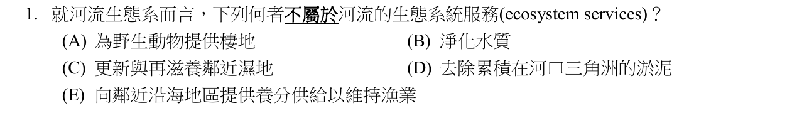
原卷PDF2 · 官方原答案PDF10 · 已核對生物釋疑PDF4–7
官方採計：D 原答案：D
未列於已取得106生物釋疑PDF4–7；依同年度原答案PDF10採計
主分類：Ch56 Conservation Biology and Global Change
56.1 / Biodiversity and Human Welfare
目錄行3742；條目起始印刷頁1262；實際目錄 PDF50
主分類理由：56.1 / Biodiversity and Human Welfare：判斷河川提供的人類與生物利益，核心是生態系統服務。
次分類理由：無另列最小次條目；題目問服務種類，非河川上下游分帶，故以56.1最小條目為主，移除初擬的水域分帶次目。
科學說明：官方D。棲地、水質淨化、濕地更新及沿岸養分輸送屬題設服務；「去除累積在河口三角洲的淤泥」不是此處列舉的調節服務。河川仍有侵蝕、搬運與沉積作用，不能反推河川永遠不移除沉積物。
來源涵蓋範圍：本地Campbell正文支援所列分類原理；原題及同年度釋疑的假設與措辭限制另見科學說明。
教材正文：印刷1177／PDF1226、印刷1179／PDF1228、印刷1262／PDF1311、印刷1263／PDF1312
補充來源：本題未另列課本外來源
另行比較：比較水域分帶與生態系統服務分類。
題目問服務種類，非河川上下游分帶，故以56.1最小條目為主，移除初擬的水域分帶次目。
結論：證據確認，分類疑義已解決。完整覆核紀錄
Q02 · 56.1 / Threats to Biodiversity 正式分類
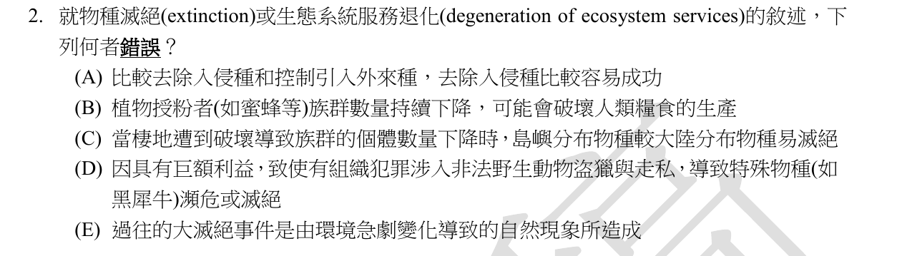
原卷PDF2 · 官方原答案PDF10 · 已核對生物釋疑PDF4–7
官方採計：A 原答案：A
未列於已取得106生物釋疑PDF4–7；依同年度原答案PDF10採計
主分類：Ch56 Conservation Biology and Global Change
56.1 / Threats to Biodiversity
目錄行3745；條目起始印刷頁1263；實際目錄 PDF50
次分類：Ch56 Conservation Biology and Global Change
56.1 / Biodiversity and Human Welfare
目錄行3742；條目起始印刷頁1262；實際目錄 PDF50
主分類理由：56.1 / Threats to Biodiversity：入侵種預防與移除難度，是生物多樣性威脅的直接判別。
次分類理由：56.1 / Biodiversity and Human Welfare：授粉者下降連結人類食物生產與生態系統服務。
科學說明：官方A。已建立入侵族群往往難以根除，預防引入一般較有效；授粉、棲地減少、過度獵捕都是保育議題。島嶼風險是分布狹窄等條件下的通常趨勢，不宣稱每一島嶼種必較每一大陸種脆弱。
來源涵蓋範圍：本地Campbell正文支援所列分類原理；原題及同年度釋疑的假設與措辭限制另見科學說明。
教材正文：印刷1262／PDF1311、印刷1263／PDF1312、印刷1264／PDF1313、印刷1265／PDF1314
補充來源：本題未另列課本外來源
Q03 · 56.4 / Greenhouse Gases and Climate Change 正式分類
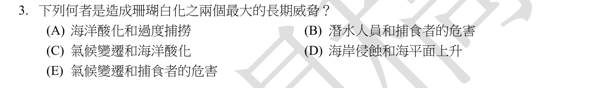
原卷PDF2 · 官方原答案PDF10 · 已核對生物釋疑PDF4–7
官方採計：C 原答案：C
未列於已取得106生物釋疑PDF4–7；依同年度原答案PDF10採計
主分類：Ch56 Conservation Biology and Global Change
56.4 / Greenhouse Gases and Climate Change
目錄行3787；條目起始印刷頁1278；實際目錄 PDF50
次分類：Ch28 Protists
28.6 / Symbiotic Protists
目錄行1847；條目起始印刷頁614；實際目錄 PDF42
主分類理由：56.4 / Greenhouse Gases and Climate Change：暖化及海水酸化是溫室氣體增加下的長期珊瑚礁壓力。
次分類理由：28.6 / Symbiotic Protists：珊瑚與共生原生生物的關係說明白化機制。
科學說明：官方C。升溫可使珊瑚失去共生藻而白化；酸化主要妨礙碳酸鈣形成及礁體維持。原題把兩者都包進「造成白化」的語句偏廣，保留原文，勿將酸化與熱白化視為完全相同機制。
來源涵蓋範圍：本地Campbell支援所列分類框架；具名外部事件／機制／科學界線由列示來源補充，實讀範圍見來源紀錄。
教材正文：印刷614／PDF663、印刷615／PDF664、印刷1278／PDF1327、印刷1279／PDF1328、印刷1280／PDF1329、印刷1281／PDF1330、印刷1282／PDF1331
補充來源：S01
另行比較：比較人為干擾的列舉與具體共生機制。
56.4處理題幹兩項長期壓力；28.6補白化的共生關係，NOAA區分熱壓力與酸化效應。
結論：證據確認，分類疑義已解決。完整覆核紀錄
Q04 · 52.2 / General Features of Terrestrial Biomes 正式分類
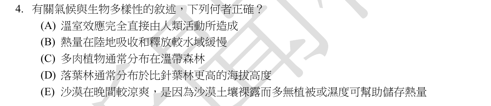
原卷PDF2 · 官方原答案PDF10 · 已核對生物釋疑PDF4–7
官方採計：E 原答案：E
未列於已取得106生物釋疑PDF4–7；依同年度原答案PDF10採計
主分類：Ch52 An Introduction to Ecology and the Biosphere
52.2 / General Features of Terrestrial Biomes
目錄行3493；條目起始印刷頁1172；實際目錄 PDF49
次分類：Ch52 An Introduction to Ecology and the Biosphere
52.1 / Regional and Local Effects on Climate
目錄行3474；條目起始印刷頁1167；實際目錄 PDF49
次分類：Ch52 An Introduction to Ecology and the Biosphere
52.1 / Effects of Vegetation on Climate
目錄行3477；條目起始印刷頁1169；實際目錄 PDF49
主分類理由：52.2 / General Features of Terrestrial Biomes：正確選項描述沙漠每日溫差與稀疏植被，對應陸域生物群系的沙漠特徵。
次分類理由：52.1 / Regional and Local Effects on Climate：水域高比熱緩和氣候，用於排除B；52.1 / Effects of Vegetation on Climate：植被的蒸散與地表能量收支補充E的條件。
科學說明：官方E。沙漠乾燥、植被少，夜間散熱可使日夜溫差大；水的高比熱使水域升降溫較慢。溫室效應本來就存在，人類增強其作用；多肉植物常見於乾旱環境；一般海拔帶狀分布不能照D倒置。E屬概括，仍受雲量、季節等影響。
來源涵蓋範圍：本地Campbell正文支援所列分類原理；原題及同年度釋疑的假設與措辭限制另見科學說明。
教材正文：印刷1167／PDF1216、印刷1168／PDF1217、印刷1169／PDF1218、印刷1172／PDF1221、印刷1173／PDF1222、印刷1174／PDF1223
補充來源：本題未另列課本外來源
另行比較：初擬氣候區域效應為主，再比對正確選項及沙漠圖文。
改以52.2群系最小條目為主，保留52.1的水域與植被兩個同章次目。教材1173沙漠描述及1168–1169氣候段落共同支援。
結論：證據確認，分類疑義已解決。完整覆核紀錄
Q05 · 54.1 / Competition 正式分類
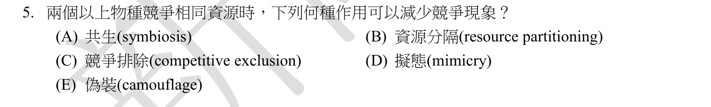
原卷PDF2 · 官方原答案PDF10 · 已核對生物釋疑PDF4–7
官方採計：B 原答案：B
未列於已取得106生物釋疑PDF4–7；依同年度原答案PDF10採計
主分類：Ch54 Community Ecology
54.1 / Competition
目錄行3598；條目起始印刷頁1215；實際目錄 PDF50
主分類理由：54.1 / Competition：資源分隔是在競爭框架中減少生態棲位重疊的機制。
次分類理由：無另列最小次條目；教材1215–1216直接把分隔與棲位差異連結；最小目錄未單列resource partitioning，採其真實父條目Competition。
科學說明：官方B。利用不同資源、空間或時間可降低競爭並促進共存；競爭排除是高度重疊時一方被排除的結果，非題問的共存機制。
來源涵蓋範圍：本地Campbell正文支援所列分類原理；原題及同年度釋疑的假設與措辭限制另見科學說明。
教材正文：印刷1215／PDF1264、印刷1216／PDF1265
補充來源：本題未另列課本外來源
另行比較：比較競爭排除與資源分隔。
教材1215–1216直接把分隔與棲位差異連結；最小目錄未單列resource partitioning，採其真實父條目Competition。
結論：證據確認，分類疑義已解決。完整覆核紀錄
Q06 · 23.2 / The Hardy-Weinberg Equation 正式分類
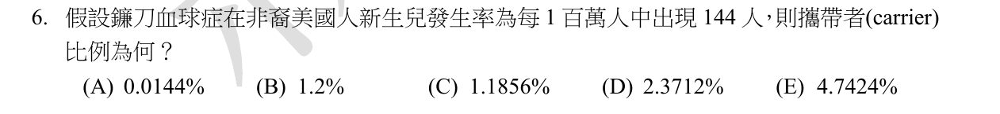
原卷PDF2 · 官方原答案PDF10 · 已核對生物釋疑PDF4–7
官方採計：D 原答案：D
未列於已取得106生物釋疑PDF4–7；依同年度原答案PDF10採計
主分類：Ch23 The Evolution of Populations
23.2 / The Hardy-Weinberg Equation
目錄行1445；條目起始印刷頁490；實際目錄 PDF41
主分類理由：23.2 / The Hardy-Weinberg Equation：由隱性疾病頻率反推帶因者比例必須用Hardy–Weinberg關係。
次分類理由：無另列最小次條目；分母及百分比重算，A是患病率、B是致病等位基因率，不能代替帶因者2pq。
科學說明：官方D。在題目默認的二等位基因及Hardy–Weinberg近似下，q²=144/1000000=0.000144，q=0.012、p=0.988，2pq=0.023712=2.3712%。疾病發生率本身不足以無條件推定所有真實族群的帶因比例。
來源涵蓋範圍：本地Campbell正文支援所列分類原理；原題及同年度釋疑的假設與措辭限制另見科學說明。
教材正文：印刷490／PDF539、印刷491／PDF540、印刷492／PDF541、印刷493／PDF542
補充來源：本題未另列課本外來源
另行比較：比較患病比例、致病等位基因頻率與帶因比例。
分母及百分比重算，A是患病率、B是致病等位基因率，不能代替帶因者2pq。
結論：證據確認，分類疑義已解決。完整覆核紀錄
Q07 · 23.2 / The Hardy-Weinberg Equation 正式分類
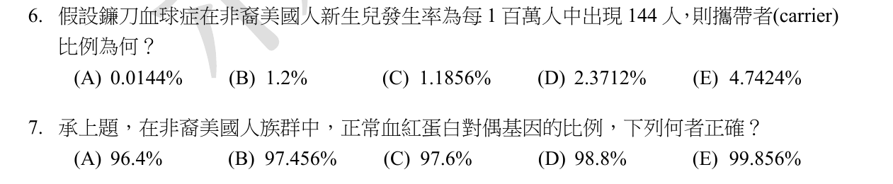
原卷PDF2 · 官方原答案PDF10 · 已核對生物釋疑PDF4–7
官方採計：D 原答案：D
未列於已取得106生物釋疑PDF4–7；依同年度原答案PDF10採計
主分類：Ch23 The Evolution of Populations
23.2 / The Hardy-Weinberg Equation
目錄行1445；條目起始印刷頁490；實際目錄 PDF41
主分類理由：23.2 / The Hardy-Weinberg Equation：承Q6的平衡模型求正常等位基因頻率p。
次分類理由：無另列最小次條目；使用Q6同一百萬人／144患病的資料與假設，兩個分母意義分開，未借其他年度資料。
科學說明：官方D。依Q6的q=0.012，正常等位基因p=1−q=0.988=98.8%；不是「正常表型者比例」1−q²。Q6完整題幹隨Q7原圖保存。
來源涵蓋範圍：本地Campbell正文支援所列分類原理；原題及同年度釋疑的假設與措辭限制另見科學說明。
教材正文：印刷490／PDF539、印刷491／PDF540、印刷492／PDF541、印刷493／PDF542
補充來源：本題未另列課本外來源
另行比較：比較正常基因與未患病者比例。
使用Q6同一百萬人／144患病的資料與假設，兩個分母意義分開，未借其他年度資料。
結論：證據確認，分類疑義已解決。完整覆核紀錄
Q08 · 17.5 / Types of Small-Scale Mutations 正式分類
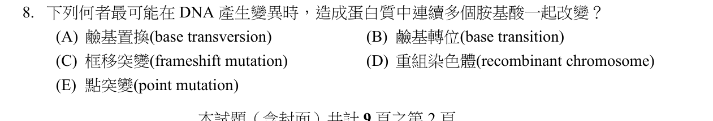
原卷PDF2 · 官方原答案PDF10 · 釋疑PDF4
官方採計：C 原答案：C
維持原答案C
主分類：Ch17 Gene Expression: From Gene to Protein
17.5 / Types of Small-Scale Mutations
目錄行1085；條目起始印刷頁357；實際目錄 PDF39
主分類理由：17.5 / Types of Small-Scale Mutations：非3倍數插入或缺失造成閱讀框改變，是連續下游胺基酸改變的直接機制。
次分類理由：無另列最小次條目；採17.5的小規模突變最小條目；不沿用釋疑把所有point mutation一律等同只改一個胺基酸的過度概括。
科學說明：官方C，釋疑維持。框移可能改變多個胺基酸，也可能很快遇到終止碼。原題A/B的中文譯名與英文transversion/transition原樣保存；「點突變」在不同教材定義可涵蓋小規模替換或插缺，C仍是最具體機制。
來源涵蓋範圍：本地Campbell正文支援所列分類原理；原題及同年度釋疑的假設與措辭限制另見科學說明。
教材正文：印刷357／PDF406、印刷358／PDF407、印刷359／PDF408
補充來源：本題未另列課本外來源
另行比較：比較單一鹼基置換和框移；檢查官方對point mutation的窄定義。
採17.5的小規模突變最小條目；不沿用釋疑把所有point mutation一律等同只改一個胺基酸的過度概括。
結論：證據確認，分類疑義已解決。完整覆核紀錄
Q09 · 14.4 / Pedigree Analysis 正式分類
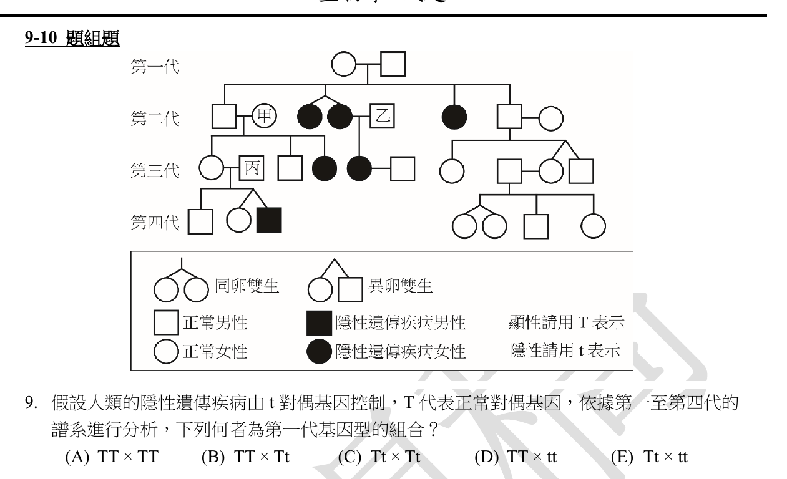
原卷PDF3 · 官方原答案PDF10 · 已核對生物釋疑PDF4–7
官方採計：C 原答案：C
未列於已取得106生物釋疑PDF4–7；依同年度原答案PDF10採計
主分類：Ch14 Mendel and the Gene Idea
14.4 / Pedigree Analysis
目錄行908；條目起始印刷頁284；實際目錄 PDF38
次分類：Ch14 Mendel and the Gene Idea
14.4 / Recessively Inherited Disorders
目錄行911；條目起始印刷頁285；實際目錄 PDF38
主分類理由：14.4 / Pedigree Analysis：完整四代譜系的親子表型限制決定第一代基因型。
次分類理由：14.4 / Recessively Inherited Disorders：隱性病患者tt、正常帶因者Tt的規則是推理前提。
科學說明：官方C。第一代兩人正常卻有患病女兒，患病tt必各從父母得到t，因此兩人均Tt。題幹已明定常染色體式T/t隱性模型，不需另假設性聯或新突變。
來源涵蓋範圍：本地Campbell正文支援所列分類原理；原題及同年度釋疑的假設與措辭限制另見科學說明。
教材正文：印刷284／PDF333、印刷285／PDF334
補充來源：本題未另列課本外來源
Q10 · 14.4 / Pedigree Analysis 正式分類
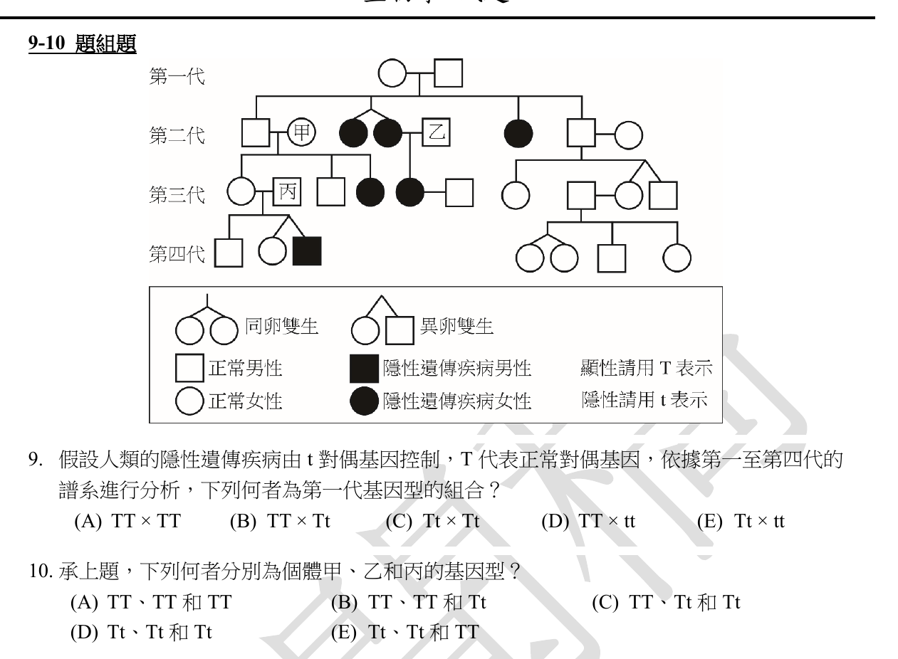
原卷PDF3 · 官方原答案PDF10 · 已核對生物釋疑PDF4–7
官方採計：D 原答案：D
未列於已取得106生物釋疑PDF4–7；依同年度原答案PDF10採計
主分類：Ch14 Mendel and the Gene Idea
14.4 / Pedigree Analysis
目錄行908；條目起始印刷頁284；實際目錄 PDF38
次分類：Ch14 Mendel and the Gene Idea
14.4 / Recessively Inherited Disorders
目錄行911；條目起始印刷頁285；實際目錄 PDF38
主分類理由：14.4 / Pedigree Analysis：利用甲乙丙各自的患病子代反推正常親本必帶t。
次分類理由：14.4 / Recessively Inherited Disorders：正常表型不能排除隱性帶因者。
科學說明：官方D。甲有患病女兒、乙與患病配偶生患病女兒、丙有患病兒子；三人均正常且必提供t，故均Tt。不是看到正常就判TT。
來源涵蓋範圍：本地Campbell正文支援所列分類原理；原題及同年度釋疑的假設與措辭限制另見科學說明。
教材正文：印刷284／PDF333、印刷285／PDF334
補充來源：本題未另列課本外來源
另行比較：重開Q10完整家譜，對照甲乙丙的位置與各自子代。
甲乙丙各有獨立親子證據；Q9題幹與家譜連同Q10保存，沒有依附錯誤代別。
結論：證據確認，分類疑義已解決。完整覆核紀錄
Q11 · 16.2 / Proofreading and Repairing DNA 正式分類
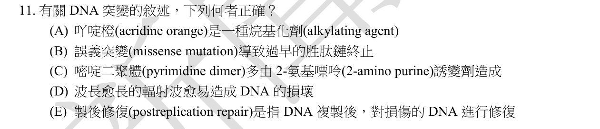
原卷PDF3 · 官方原答案PDF10 · 已核對生物釋疑PDF4–7
官方採計：E 原答案：E
未列於已取得106生物釋疑PDF4–7；依同年度原答案PDF10採計
主分類：Ch16 The Molecular Basis of Inheritance
16.2 / Proofreading and Repairing DNA
目錄行1013；條目起始印刷頁327；實際目錄 PDF39
次分類：Ch17 Gene Expression: From Gene to Protein
17.5 / New Mutations and Mutagens
目錄行1088；條目起始印刷頁360；實際目錄 PDF39
次分類：Ch17 Gene Expression: From Gene to Protein
17.5 / Types of Small-Scale Mutations
目錄行1085；條目起始印刷頁357；實際目錄 PDF39
主分類理由：16.2 / Proofreading and Repairing DNA：正確選項是複製後的損傷處理，依DNA校對修復最小條目歸類。
次分類理由：17.5 / New Mutations and Mutagens：吖啶橙、鹼基類似物及紫外線的誘變機制用於排除A/C/D；17.5 / Types of Small-Scale Mutations：missense與提早終止的nonsense不同。
科學說明：官方E。吖啶橙是嵌入劑，非典型烷基化劑；嘧啶二聚體常由UV造成；missense通常換胺基酸，nonsense才形成提前終止。製後修復泛指複製後處理損傷後果，常涉及缺口填補、模板切換或跨損傷合成，不等同原始損傷立即被切除。輻射傷害亦非波長愈長必愈大。
來源涵蓋範圍：本地Campbell支援所列分類框架；具名外部事件／機制／科學界線由列示來源補充，實讀範圍見來源紀錄。
教材正文：印刷327／PDF376、印刷328／PDF377、印刷357／PDF406、印刷358／PDF407、印刷359／PDF408、印刷360／PDF409
補充來源：S02
另行比較：比較突變種類、誘變劑與複製後修復／耐受。
主目16.2對應正確選項，17.5兩個次目涵蓋排除項；PRR的「修復」用語不擴成特定切除路徑。
結論：證據確認，分類疑義已解決。完整覆核紀錄
Q12 · 26.2 / Morphological and Molecular Homologies 正式分類
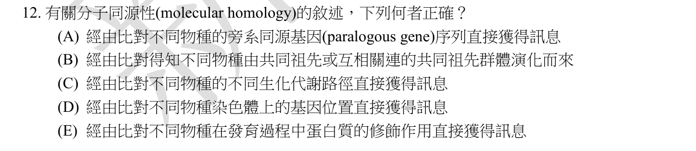
原卷PDF3 · 官方原答案PDF10 · 已核對生物釋疑PDF4–7
官方採計：B 原答案：B
未列於已取得106生物釋疑PDF4–7；依同年度原答案PDF10採計
主分類：Ch26 Phylogeny and the Tree of Life
26.2 / Morphological and Molecular Homologies
目錄行1646；條目起始印刷頁558；實際目錄 PDF42
次分類：Ch26 Phylogeny and the Tree of Life
26.4 / Gene Duplications and Gene Families
目錄行1675；條目起始印刷頁565；實際目錄 PDF42
主分類理由：26.2 / Morphological and Molecular Homologies：分子同源性指序列相似來自共同祖先。
次分類理由：26.4 / Gene Duplications and Gene Families：區分因物種分化而分離的orthologs及因基因複製形成的paralogs。
科學說明：官方B。同源證據支持共同祖先；直接把不同物種的paralog序列當作唯一物種關係指標會混入基因複製史。Paralog不被定義為永遠只能存在同一物種，複製可早於物種分化。
來源涵蓋範圍：本地Campbell正文支援所列分類原理；原題及同年度釋疑的假設與措辭限制另見科學說明。
教材正文：印刷558／PDF607、印刷559／PDF608、印刷565／PDF614、印刷566／PDF615
補充來源：本題未另列課本外來源
另行比較：比較同源的定義與同源基因的不同歷史。
26.2定義是主目，26.4的複製／基因家族作必要次目；不把A的問題錯解為跨物種paralog不可能存在。
結論：證據確認，分類疑義已解決。完整覆核紀錄
Q13 · 29.1 / Derived Traits of Plants 正式分類
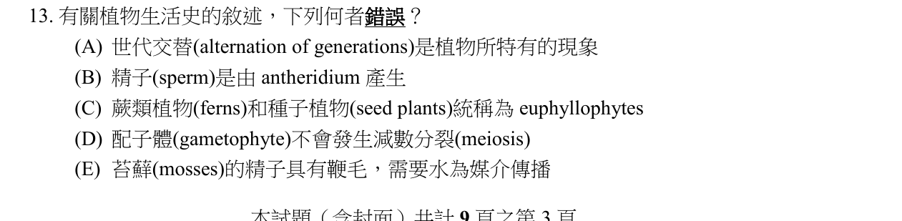
原卷PDF3 · 官方原答案PDF10 · 已核對生物釋疑PDF4–7
官方採計：A 原答案：A
未列於已取得106生物釋疑PDF4–7；依同年度原答案PDF10採計
主分類：Ch29 Plant Diversity I: How Plants Colonized Land
29.1 / Derived Traits of Plants
目錄行1867；條目起始印刷頁621；實際目錄 PDF43
次分類：Ch13 Meiosis and Sexual Life Cycles
13.2 / The Variety of Sexual Life Cycles
目錄行830；條目起始印刷頁258；實際目錄 PDF38
主分類理由：29.1 / Derived Traits of Plants：植物衍生特徵中的世代交替是題問核心。
次分類理由：13.2 / The Variety of Sexual Life Cycles：性生殖生活史明示部分藻類也有多細胞n與2n世代。
科學說明：官方A。世代交替不只陸生植物，部分藻類也有。配子體以有絲分裂產配子，苔蘚鞭毛精子需水；蕨類與種子植物屬euphyllophytes。B若概括全植物也過廣：antheridium適用苔蘚、蕨類等，種子植物通常沒有該多細胞精子器；保留題文適用範圍。
來源涵蓋範圍：本地Campbell正文支援所列分類原理；原題及同年度釋疑的假設與措辭限制另見科學說明。
教材正文：印刷258／PDF307、印刷259／PDF308、印刷621／PDF670、印刷622／PDF671、印刷629／PDF678、印刷631／PDF680
補充來源：本題未另列課本外來源
另行比較：比較陸生植物特徵與其他真核生活史是否排他。
29.1主目、13.2次目能直接查證A；B的範圍限制保留，但未自行新增官方採計答案。
結論：證據確認，分類疑義已解決。完整覆核紀錄
Q14 · 27.1 / Cell-Surface Structures 正式分類
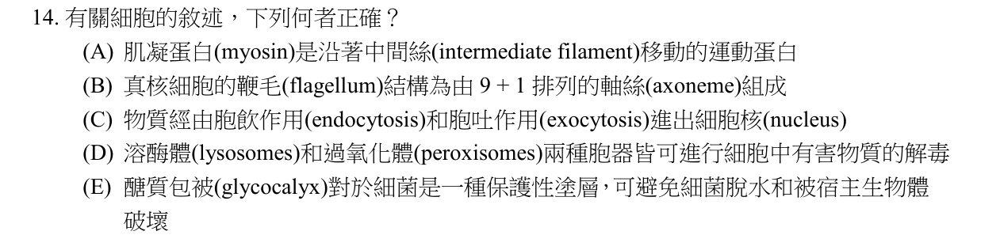
原卷PDF4 · 官方原答案PDF10 · 釋疑PDF4
官方採計：E 原答案：E
維持原答案E
主分類：Ch27 Bacteria and Archaea
27.1 / Cell-Surface Structures
目錄行1709；條目起始印刷頁574；實際目錄 PDF42
次分類：Ch06 A Tour of the Cell
6.6 / Components of the Cytoskeleton
目錄行381；條目起始印刷頁113；實際目錄 PDF36
次分類：Ch06 A Tour of the Cell
6.4 / Lysosomes: Digestive Compartments
目錄行349；條目起始印刷頁107；實際目錄 PDF36
次分類：Ch06 A Tour of the Cell
6.5 / Peroxisomes: Oxidation
目錄行371；條目起始印刷頁112；實際目錄 PDF36
主分類理由：27.1 / Cell-Surface Structures：醣質包被避免脫水及免疫攻擊，直接對應原核細胞表面構造。
次分類理由：6.6 / Components of the Cytoskeleton：肌凝蛋白沿微絲移動及鞭毛9+2由細胞骨架條目核對；6.4 / Lysosomes: Digestive Compartments：溶酶體主要酸性水解，非過氧化體式解毒；6.5 / Peroxisomes: Oxidation：過氧化體氧化／過氧化氫分解用於區分D。
科學說明：官方E，釋疑維持。A應是myosin沿actin微絲移動，不是中間絲；典型動纖毛軸絲9+2，細胞核運輸亦非一般胞吞胞吐。釋疑A段另寫成「沿著中間絲(intermediate filament)移動的運動蛋白是肌動蛋白(actin)」，此敘述本身錯誤；保留公告原字圖，科學更正為myosin與actin。題文endocytosis譯作胞飲較窄。
來源涵蓋範圍：本地Campbell正文支援所列分類原理；原題及同年度釋疑的假設與措辭限制另見科學說明。
教材正文：印刷107／PDF156、印刷112／PDF161、印刷113／PDF162、印刷114／PDF163、印刷115／PDF164、印刷116／PDF165、印刷117／PDF166、印刷574／PDF623、印刷575／PDF624
補充來源：本題未另列課本外來源
另行比較：將官方釋疑A句再與Campbell表6.1及正文117核對。
確認官方答案E與科學可相容，但官方A解釋的蛋白名稱、軌道均有錯；四個最低層主次目分開保存。
結論：證據確認，分類疑義已解決。完整覆核紀錄
Q15 · 31.2 / Sexual Reproduction 正式分類
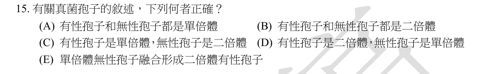
原卷PDF4 · 官方原答案PDF10 · 釋疑PDF4、釋疑PDF5
官方採計：A 原答案：A
維持原答案A
主分類：Ch31 Fungi
31.2 / Sexual Reproduction
目錄行1979；條目起始印刷頁658；實際目錄 PDF43
次分類：Ch31 Fungi
31.2 / Asexual Reproduction
目錄行1982；條目起始印刷頁658；實際目錄 PDF43
主分類理由：31.2 / Sexual Reproduction：有性真菌生活史的核配、減數分裂與孢子倍性是主目。
次分類理由：31.2 / Asexual Reproduction：無性孢子由有絲分裂形成，與有性孢子比較。
科學說明：官方A，釋疑維持。Campbell描述多數常見真菌的有性、無性孢子為n，但有Allomyces二倍體世代以有絲分裂產生二倍體游動孢子的例外，不能把A宣稱所有真菌的普遍定律。釋疑PDF4–5的Allomyces圖本身含倍性世代，PDF5圖上緣在原公告即不完整，保留原貌。
來源涵蓋範圍：本地Campbell支援所列分類框架；具名外部事件／機制／科學界線由列示來源補充，實讀範圍見來源紀錄。
教材正文：印刷657／PDF706、印刷658／PDF707、印刷659／PDF708、印刷661／PDF710
補充來源：S03
另行比較：核對官方引圖與A的「都是」是否相容。
研究摘要確認Allomyces的diploid spore／mitosporangium生活史；分類仍是真菌有性／無性繁殖，例外不被待審0隱藏。
結論：證據確認，分類疑義已解決。完整覆核紀錄
Q16 · 25.2 / How Rocks and Fossils Are Dated 正式分類
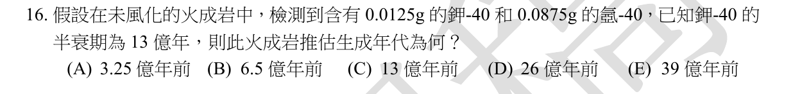
原卷PDF4 · 官方原答案PDF10 · 已核對生物釋疑PDF4–7
官方採計：E 原答案：E
未列於已取得106生物釋疑PDF4–7；依同年度原答案PDF10採計
主分類：Ch25 The History of Life on Earth
25.2 / How Rocks and Fossils Are Dated
目錄行1560；條目起始印刷頁529；實際目錄 PDF41
主分類理由：25.2 / How Rocks and Fossils Are Dated：以母子同位素比例和半衰期估算岩齡，對應岩石化石定年。
次分類理由：無另列最小次條目；保留39億年的官方計算與全部原始數值，另記USGS的雙分支限制；沒有以不同現行半衰期換掉題給13億。
科學說明：官方E。題設簡化把0.0125+0.0875=0.1g視為原始鉀，殘餘1/8=三個半衰期，故3×13億=39億年。真實40K同時衰變至40Ca與40Ar；只給氬量且忽略分支比例、初始氬及封閉系統，不能當嚴格K–Ar定年。
來源涵蓋範圍：本地Campbell支援所列分類框架；具名外部事件／機制／科學界線由列示來源補充，實讀範圍見來源紀錄。
教材正文：印刷529／PDF578、印刷530／PDF579
補充來源：S04
另行比較：比較教科書單一母／子核素簡化模型與真實40K衰變。
保留39億年的官方計算與全部原始數值，另記USGS的雙分支限制；沒有以不同現行半衰期換掉題給13億。
結論：證據確認，分類疑義已解決。完整覆核紀錄
Q17 · 23.2 / Gene Pools and Allele Frequencies 正式分類
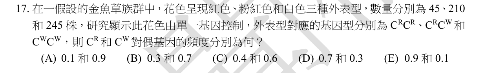
原卷PDF4 · 官方原答案PDF10 · 已核對生物釋疑PDF4–7
官方採計：B 原答案：B
未列於已取得106生物釋疑PDF4–7；依同年度原答案PDF10採計
主分類：Ch23 The Evolution of Populations
23.2 / Gene Pools and Allele Frequencies
目錄行1442；條目起始印刷頁490；實際目錄 PDF41
主分類理由：23.2 / Gene Pools and Allele Frequencies：由三種可辨識基因型直接計數族群等位基因。
次分類理由：無另列最小次條目；重新以雙倍體每株兩個拷貝計算，主目是Gene Pools and Allele Frequencies，不以平衡方程誤代計數。
科學說明：官方B。總500株；CR數=2×45+210=300、CW數=210+2×245=700，分母1000，因此0.3與0.7。此直接計數不需要Hardy–Weinberg假設。
來源涵蓋範圍：本地Campbell正文支援所列分類原理；原題及同年度釋疑的假設與措辭限制另見科學說明。
教材正文：印刷490／PDF539、印刷491／PDF540
補充來源：本題未另列課本外來源
另行比較：比較等位基因頻率與紅／白表型頻率。
重新以雙倍體每株兩個拷貝計算，主目是Gene Pools and Allele Frequencies，不以平衡方程誤代計數。
結論：證據確認，分類疑義已解決。完整覆核紀錄
Q18 · 23.2 / Gene Pools and Allele Frequencies 正式分類
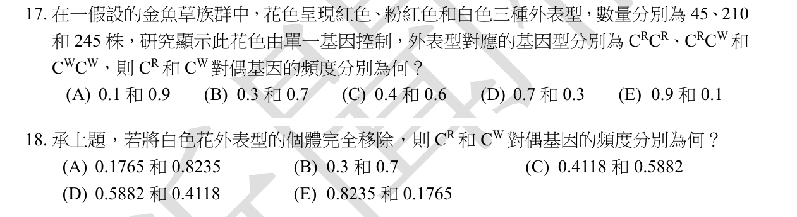
原卷PDF4 · 官方原答案PDF10 · 已核對生物釋疑PDF4–7
官方採計：D 原答案：D
未列於已取得106生物釋疑PDF4–7；依同年度原答案PDF10採計
主分類：Ch23 The Evolution of Populations
23.2 / Gene Pools and Allele Frequencies
目錄行1442；條目起始印刷頁490；實際目錄 PDF41
次分類：Ch23 The Evolution of Populations
23.3 / Natural Selection
目錄行1452；條目起始印刷頁494；實際目錄 PDF41
主分類理由：23.2 / Gene Pools and Allele Frequencies：移除白花後重新定義族群分母並計等位基因。
次分類理由：23.3 / Natural Selection：依基因型不等機率移除個體可作選汰改變頻率的比較，非宣稱人工操作就是自然選擇。
科學說明：官方D。移除245株CWCW後剩255株，CR仍300、CW剩210，分母510，得0.588235與0.411765，四捨五入0.5882／0.4118。不能維持原1000分母，亦未經新一代隨機交配。
來源涵蓋範圍：本地Campbell正文支援所列分類原理；原題及同年度釋疑的假設與措辭限制另見科學說明。
教材正文：印刷490／PDF539、印刷491／PDF540、印刷494／PDF543
補充來源：本題未另列課本外來源
Q19 · 23.2 / Gene Pools and Allele Frequencies 正式分類
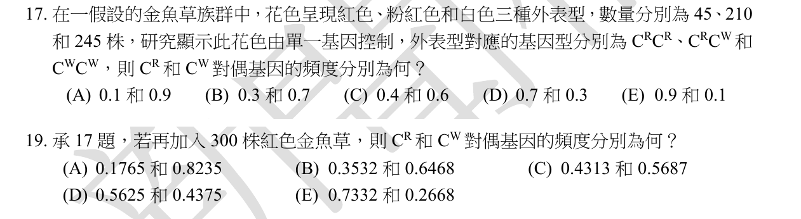
原卷PDF4 · 官方原答案PDF10 · 已核對生物釋疑PDF4–7
官方採計：D 原答案：D
未列於已取得106生物釋疑PDF4–7；依同年度原答案PDF10採計
主分類：Ch23 The Evolution of Populations
23.2 / Gene Pools and Allele Frequencies
目錄行1442；條目起始印刷頁490；實際目錄 PDF41
次分類：Ch23 The Evolution of Populations
23.3 / Gene Flow
目錄行1458；條目起始印刷頁496；實際目錄 PDF41
主分類理由：23.2 / Gene Pools and Allele Frequencies：從Q17原500株加入300株紅花，再做基因庫計數。
次分類理由：23.3 / Gene Flow：外加帶特定等位基因的個體可與基因流造成頻率改變比較，題目沒有交代實際遷移史。
科學說明：官方D。明文「承17題」，故總800株；CR=300+600=900，CW=700，分母1600，得0.5625與0.4375。不能接續Q18移除白花後的族群。
來源涵蓋範圍：本地Campbell正文支援所列分類原理；原題及同年度釋疑的假設與措辭限制另見科學說明。
教材正文：印刷490／PDF539、印刷491／PDF540、印刷496／PDF545、印刷497／PDF546
補充來源：本題未另列課本外來源
另行比較：以Q17與Q18兩個不同起點分別試算，確定題文起點。
共用Q17資料連同本題原圖保存，添加300株只新增CR600；基因流次目保留類比界線。
結論：證據確認，分類疑義已解決。完整覆核紀錄
Q20 · 27.4 / Archaea 正式分類
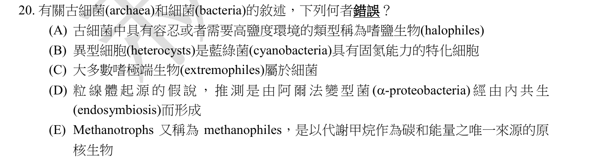
原卷PDF4 · 官方原答案PDF10 · 已核對生物釋疑PDF4–7
官方採計：C 原答案：C
未列於已取得106生物釋疑PDF4–7；依同年度原答案PDF10採計
主分類：Ch27 Bacteria and Archaea
27.4 / Archaea
目錄行1754；條目起始印刷頁585；實際目錄 PDF42
次分類：Ch27 Bacteria and Archaea
27.4 / Bacteria
目錄行1751；條目起始印刷頁583；實際目錄 PDF42
主分類理由：27.4 / Archaea：題問古菌與嗜極端環境的關係，官方C按教材典型分布判斷。
次分類理由：27.4 / Bacteria：藍綠菌固氮細胞、α變形菌及methanotrophs等細菌類群仍需辨別。
科學說明：官方C。Campbell把多種極端嗜熱、嗜鹽類型列於古菌，不能進一步宣稱所有古菌都是嗜極端生物，或所有極端菌都是古菌。E的「甲烷唯一來源」亦過度概括：2005年Methylocella實驗證明兼性甲烷氧化菌可用乙酸等多碳底物。保存原E與官方C，不自行改採計。
來源涵蓋範圍：本地Campbell支援所列分類框架；具名外部事件／機制／科學界線由列示來源補充，實讀範圍見來源紀錄。
教材正文：印刷583／PDF632、印刷584／PDF633、印刷585／PDF634、印刷586／PDF635
補充來源：S05
另行比較：查證E是否存在考試之前已知的例外。
原始研究的純培養與分子檢查排除污染解釋；E的普遍性差異保留，分類在古菌／細菌分群已明確。
結論：證據確認，分類疑義已解決。完整覆核紀錄
Q21 · 33.4 / Arthropods 正式分類
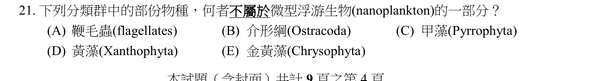
原卷PDF4 · 官方原答案PDF10 · 釋疑PDF5
官方採計：B 原答案：B
維持原答案B
主分類：Ch33 An Introduction to Invertebrates
33.4 / Arthropods
目錄行2133；條目起始印刷頁706；實際目錄 PDF44
次分類：Ch28 Protists
28.6 / Photosynthetic Protists
目錄行1850；條目起始印刷頁614；實際目錄 PDF42
主分類理由：33.4 / Arthropods：介形綱為甲殼類節肢動物，體型不屬題定nanoplankton範圍。
次分類理由：28.6 / Photosynthetic Protists：其餘列舉包括一些小型光合原生生物，不代表整群每個種均為nano大小。
科學說明：官方B，釋疑維持並定nano為2–20μm。Ostracoda是介形綱，不是單細胞藻；也不能泛稱所有介形類都是浮游性。題幹「部份物種」須保留，勿把鞭毛蟲／藻類整個分類群都放入同一粒徑。
來源涵蓋範圍：本地Campbell正文支援所列分類原理；原題及同年度釋疑的假設與措辭限制另見科學說明。
教材正文：印刷614／PDF663、印刷615／PDF664、印刷706／PDF755、印刷710／PDF759、印刷711／PDF760、印刷712／PDF761
補充來源：本題未另列課本外來源
另行比較：比較分類階元和按尺寸命名的浮游生物類別。
Campbell節肢動物正文甲殼類與公告的粒徑界線共同確認B；公告若以order描述介形類，不取代題幹的綱階元。
結論：證據確認，分類疑義已解決。完整覆核紀錄
Q22 · 45.3 / Adrenal Hormones: Response to Stress 正式分類
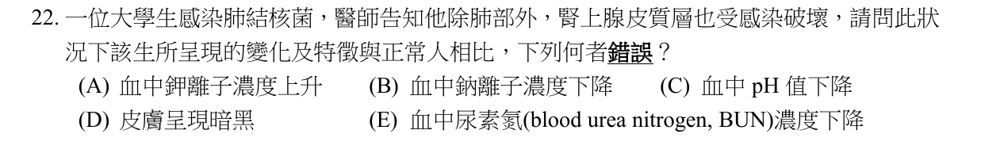
原卷PDF5 · 官方原答案PDF10 · 已核對生物釋疑PDF4–7
官方採計：E 原答案：E
未列於已取得106生物釋疑PDF4–7；依同年度原答案PDF10採計
主分類：Ch45 Hormones and the Endocrine System
45.3 / Adrenal Hormones: Response to Stress
目錄行3039；條目起始印刷頁1012；實際目錄 PDF47
次分類：Ch44 Osmoregulation and Excretion
44.5 / Homeostatic Regulation of the Kidney
目錄行2987；條目起始印刷頁994；實際目錄 PDF47
主分類理由：45.3 / Adrenal Hormones: Response to Stress：腎上腺皮質受損造成糖皮質素與礦物皮質素不足。
次分類理由：44.5 / Homeostatic Regulation of the Kidney：醛固酮對腎臟Na+/K+及體液調節是電解質變化的直接機制。
科學說明：官方E。原發性皮質不足可見低鈉、高鉀、代謝性酸中毒；皮質醇負回饋減弱使ACTH上升而色素加深。體液量降低可致腎前性氮血症，BUN傾向上升而非E的下降。這是典型病理推理，非每位患者全部表徵必同時出現。
來源涵蓋範圍：本地Campbell支援所列分類框架；具名外部事件／機制／科學界線由列示來源補充，實讀範圍見來源紀錄。
教材正文：印刷994／PDF1043、印刷995／PDF1044、印刷1012／PDF1061、印刷1013／PDF1062
補充來源：S06
另行比較：比較腎上腺皮質與髓質破壞，並檢查BUN方向。
Campbell支持激素／腎臟框架，Endotext原發性不足表格列azotemia與電解質變化，排除只憑一般感染推斷。
結論：證據確認，分類疑義已解決。完整覆核紀錄
Q23 · 29.3 / Origins and Traits of Vascular Plants 正式分類
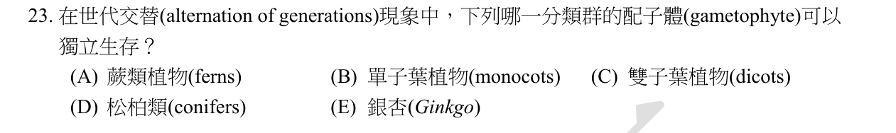
原卷PDF5 · 官方原答案PDF10 · 已核對生物釋疑PDF4–7
官方採計：A 原答案：A
未列於已取得106生物釋疑PDF4–7；依同年度原答案PDF10採計
主分類：Ch29 Plant Diversity I: How Plants Colonized Land
29.3 / Origins and Traits of Vascular Plants
目錄行1890；條目起始印刷頁629；實際目錄 PDF43
次分類：Ch30 Plant Diversity II: The Evolution of Seed Plants
30.1 / Advantages of Reduced Gametophytes
目錄行1907；條目起始印刷頁637；實際目錄 PDF43
主分類理由：29.3 / Origins and Traits of Vascular Plants：蕨類配子體可自由生活，屬維管植物起源與特徵中的世代比較。
次分類理由：30.1 / Advantages of Reduced Gametophytes：種子植物縮小配子體依賴孢子體，排除其他四個選項。
科學說明：官方A。常見同孢蕨類有獨立光合的配子體；單子葉、雙子葉、松柏、銀杏均為種子植物，配子體縮小且依附孢子體。題目採典型蕨類比較，並非每種蕨類配子體均相同。
來源涵蓋範圍：本地Campbell正文支援所列分類原理；原題及同年度釋疑的假設與措辭限制另見科學說明。
教材正文：印刷629／PDF678、印刷630／PDF679、印刷637／PDF686、印刷638／PDF687
補充來源：本題未另列課本外來源
另行比較：比較種子植物與無種子維管植物的配子體依賴程度。
正文629–630與637–638直接支持，兩章最小條目分別保留。
結論：證據確認，分類疑義已解決。完整覆核紀錄
Q24 · 38.1 / Methods of Pollination 正式分類
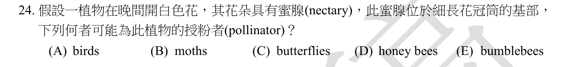
原卷PDF5 · 官方原答案PDF10 · 已核對生物釋疑PDF4–7
官方採計：B 原答案：B
未列於已取得106生物釋疑PDF4–7；依同年度原答案PDF10採計
主分類：Ch38 Angiosperm Reproduction and Biotechnology
38.1 / Methods of Pollination
目錄行2483；條目起始印刷頁825；實際目錄 PDF45
主分類理由：38.1 / Methods of Pollination：開花時間、顏色、花冠筒與蜜腺位置構成動物授粉症候群。
次分類理由：無另列最小次條目；38.1的Methods of Pollination已是目錄最低層，不另建虛構moth小節。
科學說明：官方B。夜開白花、深花筒蜜腺適合夜行具長喙的蛾取蜜；蜂與蝶多日間活動，鳥媒花有不同常見特徵。這是依特徵推測最可能授粉者，不是白花一定只能由蛾授粉。
來源涵蓋範圍：本地Campbell正文支援所列分類原理；原題及同年度釋疑的假設與措辭限制另見科學說明。
教材正文：印刷825／PDF874、印刷826／PDF875
補充來源：本題未另列課本外來源
另行比較：比較蛾、蝶、蜂與鳥的訪花時段及取蜜構造。
38.1的Methods of Pollination已是目錄最低層，不另建虛構moth小節。
結論：證據確認，分類疑義已解決。完整覆核紀錄
Q25 · 31.2 / Asexual Reproduction 正式分類
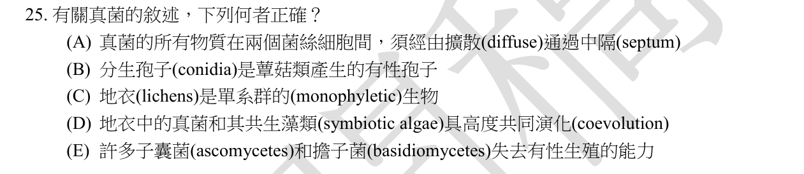
原卷PDF5 · 官方原答案PDF10 · 釋疑PDF5、釋疑PDF6
官方採計：E 原答案：E
維持原答案E
主分類：Ch31 Fungi
31.2 / Asexual Reproduction
目錄行1982；條目起始印刷頁658；實際目錄 PDF43
次分類：Ch31 Fungi
31.5 / Fungi as Mutualists
目錄行2021；條目起始印刷頁667；實際目錄 PDF43
主分類理由：31.2 / Asexual Reproduction：官方選項聚焦無已知有性期的真菌與無性繁殖。
次分類理由：31.5 / Fungi as Mutualists：地衣真菌與藻類互利關係以及共生伙伴更換用來檢驗C/D。
科學說明：官方E，釋疑維持。Campbell用「沒有已知有性期」描述不少真菌，並不等於已證實永久失去能力。分生孢子通常無性；地衣是多來源的共生組合，不是一個單系物種群。官方所引33組共生體研究顯示藻類切換及系統樹不一致，反對簡單平行共同分化；不能推成所有形式共同適應一概不存在。
來源涵蓋範圍：本地Campbell支援所列分類框架；具名外部事件／機制／科學界線由列示來源補充，實讀範圍見來源紀錄。
教材正文：印刷658／PDF707、印刷659／PDF708、印刷667／PDF716、印刷668／PDF717、印刷669／PDF718
補充來源：S07
另行比較：比對E「失去能力」與教材「no known sexual stage」，以及D高度共同演化的含義。
E保留作官方採計，語句強弱差別與共演化定義另存；31.2無性繁殖／31.5互利共生分類已確定。
結論：證據確認，分類疑義已解決。完整覆核紀錄
Q26 · 35.3 / Primary Growth of Roots 正式分類
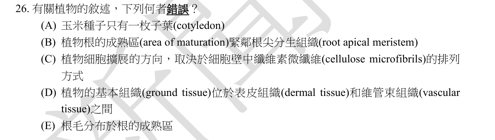
原卷PDF5 · 官方原答案PDF10 · 已核對生物釋疑PDF4–7
官方採計：B 原答案：B
未列於已取得106生物釋疑PDF4–7；依同年度原答案PDF10採計
主分類：Ch35 Vascular Plant Structure, Growth, and Development
35.3 / Primary Growth of Roots
目錄行2300；條目起始印刷頁768；實際目錄 PDF44
主分類理由：35.3 / Primary Growth of Roots：根尖分生區、伸長區與成熟區的次序直接排除B。
次分類理由：無另列最小次條目；35.3 Primary Growth of Roots有明確分區圖，足以決定分類，不為每個一般排除項擴增次章。
科學說明：官方B。由根尖向上依次為分裂區、伸長區、成熟／分化區，成熟區並不緊鄰根尖分生組織；根毛通常見於成熟區。單子葉、基本組織與微纖維方向是其他正確的植物結構敘述。
來源涵蓋範圍：本地Campbell正文支援所列分類原理；原題及同年度釋疑的假設與措辭限制另見科學說明。
教材正文：印刷768／PDF817、印刷769／PDF818
補充來源：本題未另列課本外來源
另行比較：比較根的生長區段，避免把根毛當分裂區構造。
35.3 Primary Growth of Roots有明確分區圖，足以決定分類，不為每個一般排除項擴增次章。
結論：證據確認，分類疑義已解決。完整覆核紀錄
Q27 · 17.4 / Completing and Targeting the Functional Protein 正式分類
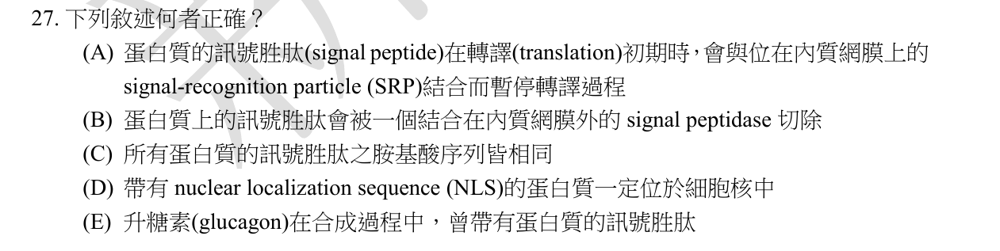
原卷PDF5 · 官方原答案PDF10 · 已核對生物釋疑PDF4–7
官方採計：E 原答案：E
未列於已取得106生物釋疑PDF4–7；依同年度原答案PDF10採計
主分類：Ch17 Gene Expression: From Gene to Protein
17.4 / Completing and Targeting the Functional Protein
目錄行1075；條目起始印刷頁352；實際目錄 PDF39
主分類理由：17.4 / Completing and Targeting the Functional Protein：訊號胜肽與SRP導引分泌蛋白到ER，是完成與定位蛋白的主題。
次分類理由：無另列最小次條目；17.4定位流程圖與段落支持E並排除A–D；不另假設成熟glucagon仍留原訊號序列。
科學說明：官方E。升糖素前驅物合成曾帶ER訊號胜肽；SRP先在細胞質辨識胜肽再結合ER受體，切割位在腔側，不是A/B的描述。訊號序列可不同；NLS表示運輸訊號，不能保證所有時刻、所有含NLS蛋白都只在核內。
來源涵蓋範圍：本地Campbell正文支援所列分類原理；原題及同年度釋疑的假設與措辭限制另見科學說明。
教材正文：印刷352／PDF401、印刷353／PDF402、印刷354／PDF403
補充來源：本題未另列課本外來源
另行比較：區分SRP與ER上的SRP receptor，及signal peptidase方向。
17.4定位流程圖與段落支持E並排除A–D；不另假設成熟glucagon仍留原訊號序列。
結論：證據確認，分類疑義已解決。完整覆核紀錄
Q28 · 9.6 / Biosynthesis (Anabolic Pathways) 正式分類
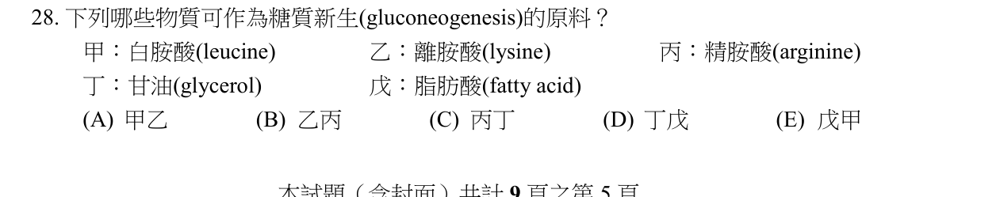
原卷PDF5 · 官方原答案PDF10 · 釋疑PDF6
官方採計：C或D 原答案：C
原C，官方更正為C或D，任選其一皆採計
主分類：Ch09 Cellular Respiration and Fermentation
9.6 / Biosynthesis (Anabolic Pathways)
目錄行611；條目起始印刷頁183；實際目錄 PDF37
次分類：Ch09 Cellular Respiration and Fermentation
9.6 / The Versatility of Catabolism
目錄行608；條目起始印刷頁182；實際目錄 PDF37
次分類：Ch06 A Tour of the Cell
6.5 / Peroxisomes: Oxidation
目錄行371；條目起始印刷頁112；實際目錄 PDF36
主分類理由：9.6 / Biosynthesis (Anabolic Pathways)：糖質新生是以非醣分子合成葡萄糖，屬合成代謝路徑。
次分類理由：9.6 / The Versatility of Catabolism：胺基酸、甘油與脂肪酸的分解入口決定可否淨生糖；6.5 / Peroxisomes: Oxidation：植物glyoxysome能把脂質轉為醣，對應官方放寬D的物種範圍。
科學說明：官方原C，更正C或D。精胺酸與甘油可生糖；白胺酸、離胺酸在哺乳動物通常純生酮。原題未限定生物，植物可由脂質經乙醛酸循環供糖；動物一般偶數鏈脂肪酸不能淨生糖，但奇數鏈末端propionyl-CoA可進入生糖路徑。因此「動物脂肪酸一律不能」也不精確。
來源涵蓋範圍：本地Campbell支援所列分類框架；具名外部事件／機制／科學界線由列示來源補充，實讀範圍見來源紀錄。
教材正文：印刷112／PDF161、印刷182／PDF231、印刷183／PDF232
補充來源：S08
另行比較：比對物種限制、脂肪甘油骨架和脂肪酸碳鏈奇偶，核查雙採計。
採計C/D忠於本年度公告；Campbell與糖新生來源支持物種／碳鏈條件，沒有把科學選項重判取代官方。
結論：證據確認，分類疑義已解決。完整覆核紀錄
Q29 · 17.3 / Split Genes and RNA Splicing 正式分類
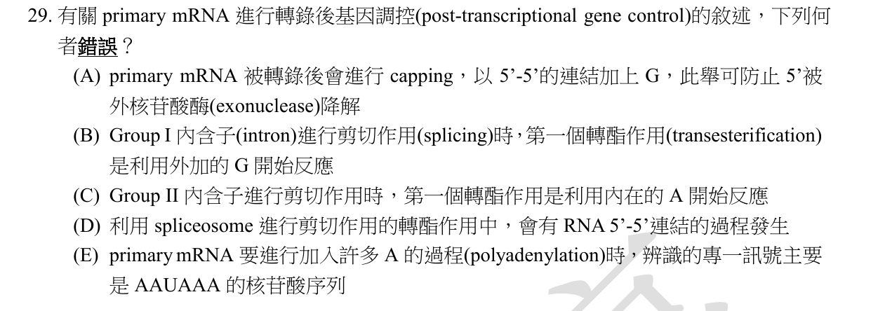
原卷PDF6 · 官方原答案PDF10 · 已核對生物釋疑PDF4–7
官方採計：D 原答案：D
未列於已取得106生物釋疑PDF4–7；依同年度原答案PDF10採計
主分類：Ch17 Gene Expression: From Gene to Protein
17.3 / Split Genes and RNA Splicing
目錄行1062；條目起始印刷頁345；實際目錄 PDF39
次分類：Ch17 Gene Expression: From Gene to Protein
17.3 / Alteration of mRNA Ends
目錄行1059；條目起始印刷頁345；實際目錄 PDF39
主分類理由：17.3 / Split Genes and RNA Splicing：剪接的兩次轉酯與套索鍵結是D的直接判別。
次分類理由：17.3 / Alteration of mRNA Ends：5′加帽與3′poly-A訊號用於區別剪接與末端加工。
科學說明：官方D。spliceosome套索是分支A的2′OH接到內含子5′磷酸，形成2′–5′鍵，不是5′–5′。Group I由外源G的3′OH起始，Group II由內部A的2′OH起始；帽為修飾G的5′–5′連結，常見加尾訊號AAUAAA。另實看本地課本345左欄把先合成並加帽端寫成3′，與同頁圖17.11衝突；保留PDF並標為錯字，正確是5′端。
來源涵蓋範圍：本地Campbell支援所列分類框架；具名外部事件／機制／科學界線由列示來源補充，實讀範圍見來源紀錄。
教材正文：印刷345／PDF394、印刷346／PDF395、印刷347／PDF396
補充來源：S09
另行比較：以化學鍵結辨識D，另查課本擷取的3′是否OCR錯誤。
PDF394視讀確認原頁就有3′錯字；用同頁圖及RNA教材獨立核對，未把錯字當科學證據。
結論：證據確認，分類疑義已解決。完整覆核紀錄
Q30 · 45.3 / Adrenal Hormones: Response to Stress 正式分類
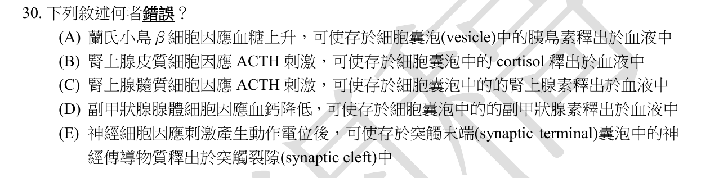
原卷PDF6 · 官方原答案PDF10 · 釋疑PDF6
官方採計：B或C 原答案：B
原B，官方更正為B或C，任選其一皆採計
主分類：Ch45 Hormones and the Endocrine System
45.3 / Adrenal Hormones: Response to Stress
目錄行3039；條目起始印刷頁1012；實際目錄 PDF47
次分類：Ch45 Hormones and the Endocrine System
45.1 / Cellular Hormone Response Pathways
目錄行3004；條目起始印刷頁1002；實際目錄 PDF47
主分類理由：45.3 / Adrenal Hormones: Response to Stress：皮質ACTH／皮質醇與髓質交感神經／腎上腺素的調控差異。
次分類理由：45.1 / Cellular Hormone Response Pathways：脂溶性類固醇與水溶性激素的分泌路徑，核對囊泡儲存錯誤。
科學說明：官方原B，更正B或C。皮質醇主要因刺激而合成並擴散釋出，不是預存分泌囊泡；髓質腎上腺素的急性釋放由交感節前神經支配，不能照C歸ACTH。胰島素、PTH及多種神經傳遞物質有囊泡釋放。
來源涵蓋範圍：本地Campbell正文支援所列分類原理；原題及同年度釋疑的假設與措辭限制另見科學說明。
教材正文：印刷1001／PDF1050、印刷1002／PDF1051、印刷1012／PDF1061、印刷1013／PDF1062
補充來源：本題未另列課本外來源
另行比較：原B與更正增加C分別對應哪個機制錯誤。
45.3腎上腺條目作主目，45.1細胞激素反應途徑作同章次目；兩個錯誤均具實際教材頁。
結論：證據確認，分類疑義已解決。完整覆核紀錄
Q31 · 9.4 / The Pathway of Electron Transport 正式分類
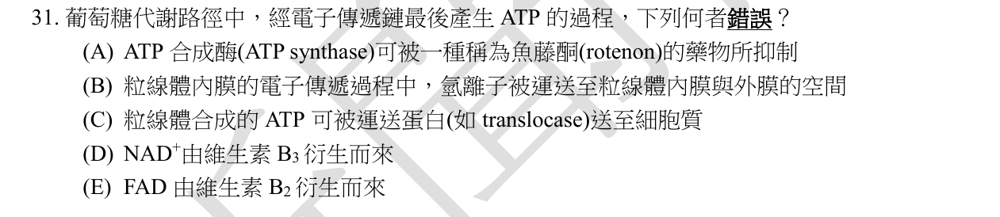
原卷PDF6 · 官方原答案PDF10 · 已核對生物釋疑PDF4–7
官方採計：A 原答案：A
未列於已取得106生物釋疑PDF4–7；依同年度原答案PDF10採計
主分類：Ch09 Cellular Respiration and Fermentation
9.4 / The Pathway of Electron Transport
目錄行582；條目起始印刷頁174；實際目錄 PDF37
次分類：Ch09 Cellular Respiration and Fermentation
9.4 / Chemiosmosis: The Energy-Coupling Mechanism
目錄行585；條目起始印刷頁175；實際目錄 PDF37
主分類理由：9.4 / The Pathway of Electron Transport：魚藤酮抑制電子傳遞鏈Complex I，是錯誤選項的機制定位。
次分類理由：9.4 / Chemiosmosis: The Energy-Coupling Mechanism：ATP synthase利用質子驅動力合成ATP，需與Complex I區別。
科學說明：官方A。魚藤酮主要抑制Complex I，並非直接作用ATP合成酶的典型抑制劑；抑制電子傳遞可間接降低ATP，故A以「直接酶標的」理解才成立。電子傳遞把H+向膜間腔泵送，ATP可經載體輸出；NAD衍自B3、FAD衍自B2。
來源涵蓋範圍：本地Campbell支援所列分類框架；具名外部事件／機制／科學界線由列示來源補充，實讀範圍見來源紀錄。
教材正文：印刷174／PDF223、印刷175／PDF224、印刷176／PDF225、印刷177／PDF226、印刷178／PDF227
補充來源：S10
另行比較：區分ATP生成降低與ATP合成酶本身被直接抑制。
本地圖9.15與化學滲透段落配合原始Complex I結合研究定位魚藤酮；不把間接影響混成直接靶點。
結論：證據確認，分類疑義已解決。完整覆核紀錄
Q32 · 9.6 / The Versatility of Catabolism 正式分類
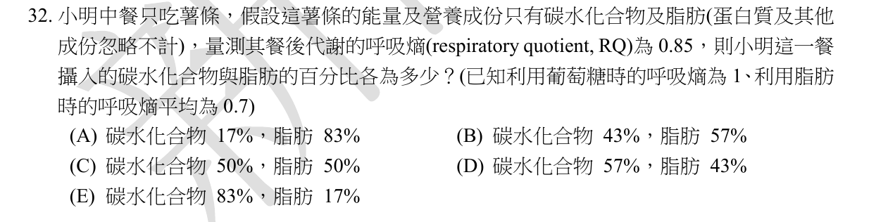
原卷PDF6 · 官方原答案PDF10 · 已核對生物釋疑PDF4–7
官方採計：C 原答案：C
未列於已取得106生物釋疑PDF4–7；依同年度原答案PDF10採計
主分類：Ch09 Cellular Respiration and Fermentation
9.6 / The Versatility of Catabolism
目錄行608；條目起始印刷頁182；實際目錄 PDF37
主分類理由：9.6 / The Versatility of Catabolism：不同呼吸底物進入細胞呼吸，需比較醣與脂肪氧化的氣體計量。
次分類理由：無另列最小次條目；數字C可依題設得到，物理量解釋另存；主目是呼吸底物多樣性，不以呼吸道換氣取代細胞氧化計量。
科學說明：官方C。按題設線性插值0.85=x×1+(1−x)×0.7，x=0.5。但RQ=VCO2/VO2，此x嚴格代表兩底物對耗氧量的權重；不能未經熱量／質量換算便斷言攝入質量或熱量各50%。餐後測值也不必等於這一餐配方。原題「呼吸熵」應為呼吸商，原字保留。
來源涵蓋範圍：本地Campbell支援所列分類框架；具名外部事件／機制／科學界線由列示來源補充，實讀範圍見來源紀錄。
教材正文：印刷182／PDF231、印刷183／PDF232
補充來源：S11
另行比較：把官方插值模型與真正定義及攝入比例意義比較。
數字C可依題設得到，物理量解釋另存；主目是呼吸底物多樣性，不以呼吸道換氣取代細胞氧化計量。
結論：證據確認，分類疑義已解決。完整覆核紀錄
Q33 · 9.6 / Biosynthesis (Anabolic Pathways) 正式分類
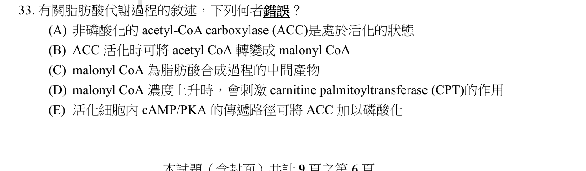
原卷PDF6 · 官方原答案PDF10 · 已核對生物釋疑PDF4–7
官方採計：D 原答案：D
未列於已取得106生物釋疑PDF4–7；依同年度原答案PDF10採計
主分類：Ch09 Cellular Respiration and Fermentation
9.6 / Biosynthesis (Anabolic Pathways)
目錄行611；條目起始印刷頁183；實際目錄 PDF37
次分類：Ch09 Cellular Respiration and Fermentation
9.6 / The Versatility of Catabolism
目錄行608；條目起始印刷頁182；實際目錄 PDF37
次分類：Ch11 Cell Communication
11.3 / Protein Phosphorylation and Dephosphorylation
目錄行721；條目起始印刷頁222；實際目錄 PDF38
主分類理由：9.6 / Biosynthesis (Anabolic Pathways)：ACC產生脂肪酸合成前驅物malonyl-CoA，核心為合成代謝協調。
次分類理由：9.6 / The Versatility of Catabolism：CPT1控制長鏈脂肪酸進入氧化的通道，與合成方向相反；11.3 / Protein Phosphorylation and Dephosphorylation：可逆磷酸化調節ACC活性，另存訊號調控條目。
科學說明：官方D。malonyl-CoA抑制CPT1而非刺激，避免合成脂肪酸同時大量氧化。ACC催化acetyl-CoA→malonyl-CoA，通常去磷酸化較活躍；cAMP相關調控可促進其抑制性磷酸化，不能說所有磷酸化都活化。Campbell僅支援代謝與磷酸化框架，ACC/CPT1細節由原始研究補充。
來源涵蓋範圍：本地Campbell支援所列分類框架；具名外部事件／機制／科學界線由列示來源補充，實讀範圍見來源紀錄。
教材正文：印刷182／PDF231、印刷183／PDF232、印刷222／PDF271、印刷223／PDF272
補充來源：S12
另行比較：比較合成路徑中間物與對氧化通路的回饋方向。
1977大鼠肝研究直接定位抑制於carnitine acyltransferase I；主次理由不冒稱Campbell逐字涵蓋全部酶名。
結論：證據確認，分類疑義已解決。完整覆核紀錄
Q34 · 17.4 / Molecular Components of Translation 正式分類
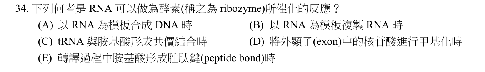
原卷PDF7 · 官方原答案PDF10 · 已核對生物釋疑PDF4–7
官方採計：E 原答案：E
未列於已取得106生物釋疑PDF4–7；依同年度原答案PDF10採計
主分類：Ch17 Gene Expression: From Gene to Protein
17.4 / Molecular Components of Translation
目錄行1069；條目起始印刷頁348；實際目錄 PDF39
次分類：Ch17 Gene Expression: From Gene to Protein
17.3 / Split Genes and RNA Splicing
目錄行1062；條目起始印刷頁345；實際目錄 PDF39
主分類理由：17.4 / Molecular Components of Translation：核糖體rRNA催化胜肽鍵，是RNA催化的生理實例。
次分類理由：17.3 / Split Genes and RNA Splicing：RNA剪接段落的ribozyme概念提供催化RNA框架。
科學說明：官方E。核糖體大次單元rRNA具有peptidyl-transferase活性；tRNA接胺基酸由aminoacyl-tRNA synthetase催化。逆轉錄及通常RNA複製使用蛋白酶；不能把本題選E擴成「RNA永不可能催化RNA聚合」，因實驗選育的RNA催化劑另有範圍。
來源涵蓋範圍：本地Campbell正文支援所列分類原理；原題及同年度釋疑的假設與措辭限制另見科學說明。
教材正文：印刷346／PDF395、印刷347／PDF396、印刷348／PDF397、印刷349／PDF398、印刷350／PDF399
補充來源：本題未另列課本外來源
另行比較：比較tRNA攜帶胺基酸、核糖體催化與核酸聚合。
正文350指出rRNA的催化作用，346支持ribozyme定義；兩個同章最低條目保留。
結論：證據確認，分類疑義已解決。完整覆核紀錄
Q35 · 17.3 / Split Genes and RNA Splicing 正式分類
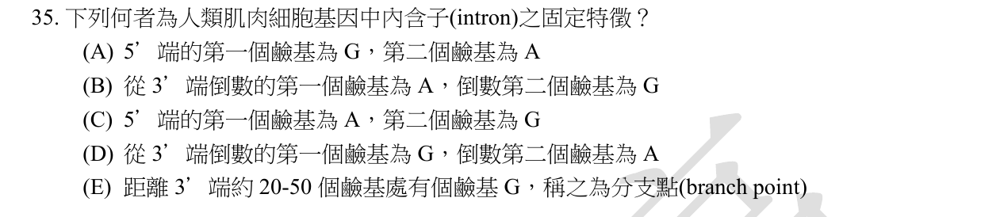
原卷PDF7 · 官方原答案PDF10 · 已核對生物釋疑PDF4–7
官方採計：D 原答案：D
未列於已取得106生物釋疑PDF4–7；依同年度原答案PDF10採計
主分類：Ch17 Gene Expression: From Gene to Protein
17.3 / Split Genes and RNA Splicing
目錄行1062；條目起始印刷頁345；實際目錄 PDF39
主分類理由：17.3 / Split Genes and RNA Splicing：內含子的剪接邊界與分支點，直接對應RNA splicing。
次分類理由：無另列最小次條目；D是常見主要型內含子規則，並非無例外定律；U12 AT–AC原始研究提供範圍證據，分類仍17.3。
科學說明：官方D。典型GU–AG內含子以AG結尾，所以由3′端倒數第一G、第二A；5′常GU，分支點通常A而非G。題幹說「固定」過強，少數U12型如AU–AC內含子早已存在，人類肌肉細胞不等於所有基因都只有GU–AG。
來源涵蓋範圍：本地Campbell支援所列分類框架；具名外部事件／機制／科學界線由列示來源補充，實讀範圍見來源紀錄。
教材正文：印刷345／PDF394、印刷346／PDF395、印刷347／PDF396
補充來源：S09、S13
另行比較：確認倒數方向，並查普遍性是否有minor intron例外。
D是常見主要型內含子規則，並非無例外定律；U12 AT–AC原始研究提供範圍證據，分類仍17.3。
結論：證據確認，分類疑義已解決。完整覆核紀錄
Q36 · 17.4 / Completing and Targeting the Functional Protein 正式分類
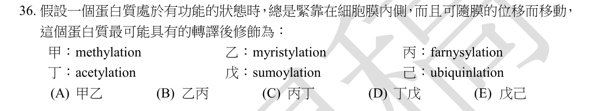
原卷PDF7 · 官方原答案PDF10 · 已核對生物釋疑PDF4–7
官方採計：B 原答案：B
未列於已取得106生物釋疑PDF4–7；依同年度原答案PDF10採計
主分類：Ch17 Gene Expression: From Gene to Protein
17.4 / Completing and Targeting the Functional Protein
目錄行1075；條目起始印刷頁352；實際目錄 PDF39
次分類：Ch07 Membrane Structure and Function
7.1 / Membrane Proteins and Their Functions
目錄行417；條目起始印刷頁129；實際目錄 PDF36
主分類理由：17.4 / Completing and Targeting the Functional Protein：蛋白的脂質修飾與定位在功能成熟流程中判別。
次分類理由：7.1 / Membrane Proteins and Their Functions：脂質錨定將蛋白附於膜內側，屬膜蛋白功能與結構。
科學說明：官方B（乙丙）。myristoylation與farnesylation附疏水基團可協助膜內側定位；往往還需其他定位訊號，非單一修飾保證永久緊貼。myristoylation常在轉譯尚進行時發生，因此原題統稱「轉譯後」不盡精確；原卷myristylation、farnysylation、ubiquinlation拼字保留。
來源涵蓋範圍：本地Campbell支援所列分類框架；具名外部事件／機制／科學界線由列示來源補充，實讀範圍見來源紀錄。
教材正文：印刷129／PDF178、印刷130／PDF179、印刷352／PDF401、印刷353／PDF402、印刷354／PDF403
補充來源：S14
另行比較：比較膜脂錨與甲基／乙醯／SUMO／泛素修飾，另檢查時間稱謂。
依功能可選乙丙，記錄共轉譯例外；17.4主目及7.1次目各有正文與外部教材補充。
結論：證據確認，分類疑義已解決。完整覆核紀錄
Q37 · 42.4 / Cardiovascular Disease 正式分類
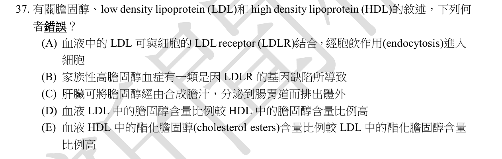
原卷PDF7 · 官方原答案PDF10 · 釋疑PDF7
官方採計：E 原答案：E
維持原答案E
主分類：Ch42 Circulation and Gas Exchange
42.4 / Cardiovascular Disease
目錄行2805；條目起始印刷頁937；實際目錄 PDF46
次分類：Ch07 Membrane Structure and Function
7.5 / Endocytosis
目錄行466；條目起始印刷頁139；實際目錄 PDF36
主分類理由：42.4 / Cardiovascular Disease：膽固醇運輸、LDL/HDL及LDLR相關疾病是主題。
次分類理由：7.5 / Endocytosis：LDLR介導胞吞使LDL入細胞，支持A的機制判讀。
科學說明：官方E，釋疑維持。按一般「整顆粒質量的組成百分比」，LDL的膽固醇酯比例較HDL高；不能換成「各粒子總膽固醇中酯化的比例」作同一比較。原文endocytosis譯胞飲較窄；C原文是「腸胃道」非「胃」，膽汁進小腸。HDL膽固醇回肝也可經選擇性脂質攝取，非必須整顆吞入。
來源涵蓋範圍：本地Campbell支援所列分類框架；具名外部事件／機制／科學界線由列示來源補充，實讀範圍見來源紀錄。
教材正文：印刷139／PDF188、印刷140／PDF189、印刷937／PDF986、印刷938／PDF987
補充來源：S15
另行比較：檢查釋疑的比例分母與C的中文範圍。
採官方E並保留比例定義；Campbell支持LDL/HDL框架，補充脂蛋白來源區分脂質交換與整顆攝取。
結論：證據確認，分類疑義已解決。完整覆核紀錄
Q38 · 11.3 / Small Molecules and Ions as Second Messengers 正式分類
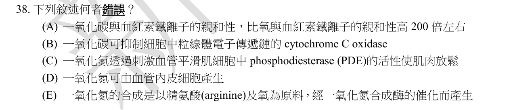
原卷PDF7 · 官方原答案PDF10 · 已核對生物釋疑PDF4–7
官方採計：C 原答案：C
未列於已取得106生物釋疑PDF4–7；依同年度原答案PDF10採計
主分類：Ch11 Cell Communication
11.3 / Small Molecules and Ions as Second Messengers
本地文字目錄標題與本地12e PDF不同；保留文字目錄行號及原標題，正式名稱採PDF。 目錄行724；條目起始印刷頁223；實際目錄 PDF38
次分類：Ch42 Circulation and Gas Exchange
42.3 / Blood Pressure
目錄行2789；條目起始印刷頁930；實際目錄 PDF46
主分類理由：11.3 / Small Molecules and Ions as Second Messengers：NO活化guanylyl cyclase增加cGMP，與PDE降解訊號方向相反。
次分類理由：42.3 / Blood Pressure：NO調節血管平滑肌與血壓的生理效果。
科學說明：官方C。內皮NO可促進cGMP生成使血管平滑肌放鬆；PDE會分解cGMP，不能按C把促進PDE當作放鬆機制。NO由arginine與O2經NOS形成；CO對血紅素親和力高，也可抑制細胞色素氧化酶。
來源涵蓋範圍：本地Campbell正文支援所列分類原理；原題及同年度釋疑的假設與措辭限制另見科學說明。
教材正文：印刷223／PDF272、印刷224／PDF273、印刷225／PDF274、印刷930／PDF979、印刷931／PDF980、印刷932／PDF981
補充來源：本題未另列課本外來源
另行比較：比較cGMP的生成酶與降解酶，並核對目錄正式名稱。
PDF目錄38真名為Small Molecules and Ions as Second Messengers，文字目錄少了Ions且措辭不同，保留雙來源差異。
結論：證據確認，分類疑義已解決。完整覆核紀錄
Q39 · 42.2 / Maintaining the Heart’s Rhythmic Beat 正式分類
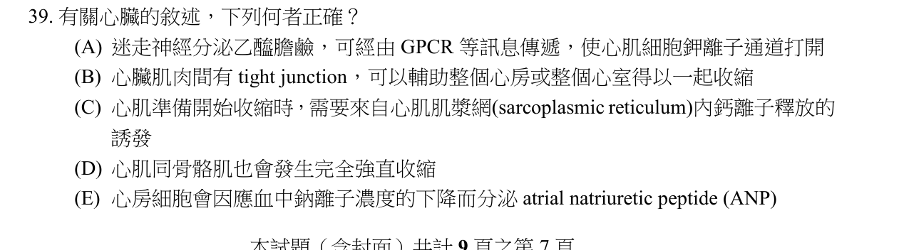
原卷PDF7 · 官方原答案PDF10 · 已核對生物釋疑PDF4–7
官方採計：A 原答案：A
未列於已取得106生物釋疑PDF4–7；依同年度原答案PDF10採計
主分類：Ch42 Circulation and Gas Exchange
42.2 / Maintaining the Heart’s Rhythmic Beat
本地文字目錄標題與本地12e PDF不同；保留文字目錄行號及原標題，正式名稱採PDF。 目錄行2776；條目起始印刷頁928；實際目錄 PDF46
次分類：Ch49 Nervous Systems
49.1 / The Peripheral Nervous System
目錄行3245；條目起始印刷頁1088；實際目錄 PDF48
主分類理由：42.2 / Maintaining the Heart’s Rhythmic Beat：迷走神經調整心臟節律，是正確選項的生理位置。
次分類理由：49.1 / The Peripheral Nervous System：副交感膽鹼訊息與心臟靶細胞的自主神經支配。
科學說明：官方A。ACh可經M2/G蛋白活化GIRK鉀通道，使節律放慢。B應為gap junction非tight junction；長不應期防止強直，ANP主要回應心房牽張。C原文只說SR釋Ca參與啟動收縮，並未寫「只需SR」；鈣誘發鈣釋放符合心肌生理，故不能硬改文字把C判絕對錯。保留官方A及C的科學歧義，不自行增加採計。
來源涵蓋範圍：本地Campbell支援所列分類框架；具名外部事件／機制／科學界線由列示來源補充，實讀範圍見來源紀錄。
教材正文：印刷928／PDF977、印刷929／PDF978、印刷1088／PDF1137、印刷1089／PDF1138、印刷1090／PDF1139
補充來源：S16
另行比較：重讀C完整中文，查心肌膜Ca流入與SR釋放的先後。
作者教材確認L型通道Ca流入誘發SR放Ca，後者供大部分收縮Ca；來源爭議不妨礙心律／自主神經分類確定。
結論：證據確認，分類疑義已解決。完整覆核紀錄
Q40 · 43.4 / Evolutionary Adaptations of Pathogens That Underlie Immune System Avoidance 正式分類
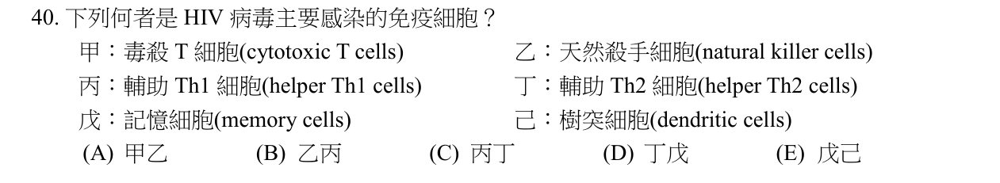
原卷PDF8 · 官方原答案PDF10 · 已核對生物釋疑PDF4–7
官方採計：C 原答案：C
未列於已取得106生物釋疑PDF4–7；依同年度原答案PDF10採計
主分類：Ch43 The Immune System
43.4 / Evolutionary Adaptations of Pathogens That Underlie Immune System Avoidance
目錄行2927；條目起始印刷頁971；實際目錄 PDF47
次分類：Ch43 The Immune System
43.3 / Helper T Cells: Activating Adaptive Immunity
目錄行2896；條目起始印刷頁963；實際目錄 PDF47
主分類理由：43.4 / Evolutionary Adaptations of Pathogens That Underlie Immune System Avoidance：HIV逃避免疫並感染CD4細胞，屬病原體免疫適應。
次分類理由：43.3 / Helper T Cells: Activating Adaptive Immunity：Th1/Th2同屬輔助T細胞，可由其免疫功能與CD4辨認。
科學說明：官方C（丙丁）。CD4輔助T細胞為HIV重要標的；但記憶CD4細胞也可成為感染與潛伏庫，樹突細胞可參與病毒傳播。因此「主要」不等於HIV只能感染Th1及Th2，戊「記憶細胞」本身還包含多種細胞。
來源涵蓋範圍：本地Campbell正文支援所列分類原理；原題及同年度釋疑的假設與措辭限制另見科學說明。
教材正文：印刷963／PDF1012、印刷964／PDF1013、印刷971／PDF1020、印刷972／PDF1021、印刷973／PDF1022
補充來源：本題未另列課本外來源
另行比較：避免把正確配對解成其他列項絕對不會涉及HIV。
43.4的HIV段落和43.3輔助T細胞條目足以定位，保留「主要」與細胞類別的層級差異。
結論：證據確認，分類疑義已解決。完整覆核紀錄
Q41 · 16.2 / Proofreading and Repairing DNA 正式分類
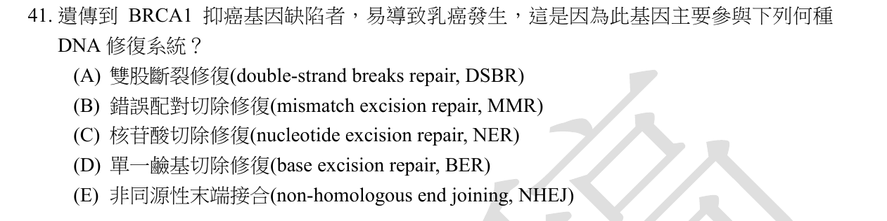
原卷PDF8 · 官方原答案PDF10 · 已核對生物釋疑PDF4–7
官方採計：A 原答案：A
未列於已取得106生物釋疑PDF4–7；依同年度原答案PDF10採計
主分類：Ch16 The Molecular Basis of Inheritance
16.2 / Proofreading and Repairing DNA
目錄行1013；條目起始印刷頁327；實際目錄 PDF39
次分類：Ch18 Regulation of Gene Expression
18.5 / Inherited Predisposition and Environmental Factors Contributing to Cancer
目錄行1172；條目起始印刷頁394；實際目錄 PDF40
主分類理由：16.2 / Proofreading and Repairing DNA：BRCA1參與DNA雙股斷裂同源重組修復，是直接機制。
次分類理由：18.5 / Inherited Predisposition and Environmental Factors Contributing to Cancer：遺傳性抑癌基因缺陷提高乳癌風險，連結癌症易感性。
科學說明：官方A。BRCA1在同源導向雙股斷裂修復中重要，缺陷可致基因體不穩定。選項A是較廣的DSBR類別，E的NHEJ也是另一種DSB修復途徑，兩者並非互斥同一階層；不可因選A就宣稱NHEJ不修雙股斷裂。
來源涵蓋範圍：本地Campbell支援所列分類框架；具名外部事件／機制／科學界線由列示來源補充，實讀範圍見來源紀錄。
教材正文：印刷327／PDF376、印刷328／PDF377、印刷394／PDF443、印刷395／PDF444
補充來源：S17
另行比較：區分損傷類型DSB與機制HR/NHEJ兩個分類層級。
1999原始BRCA1研究直接證實同源修復缺陷；以16.2主目、18.5遺傳易感性次目保存。
結論：證據確認，分類疑義已解決。完整覆核紀錄
Q42 · 41.1 / Essential Nutrients 正式分類
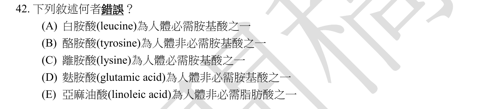
原卷PDF8 · 官方原答案PDF10 · 已核對生物釋疑PDF4–7
官方採計：E 原答案：E
未列於已取得106生物釋疑PDF4–7；依同年度原答案PDF10採計
主分類：Ch41 Animal Nutrition
41.1 / Essential Nutrients
目錄行2685；條目起始印刷頁899；實際目錄 PDF46
主分類理由：41.1 / Essential Nutrients：必需營養素的定義直接判斷亞麻油酸。
次分類理由：無另列最小次條目；41.1 Essential Nutrients真實最低條目明確列亞麻油酸，非必需是可自行合成而非不重要。
科學說明：官方E。linoleic acid屬必需脂肪酸；leucine、lysine為必需胺基酸，tyrosine、glutamate在一般健康代謝條件下可合成。酪胺酸在特定代謝疾病可成條件必需，不能將一般分類當所有病理狀態的定律。
來源涵蓋範圍：本地Campbell正文支援所列分類原理；原題及同年度釋疑的假設與措辭限制另見科學說明。
教材正文：印刷899／PDF948、印刷900／PDF949、印刷901／PDF950
補充來源：本題未另列課本外來源
另行比較：比較非必需的意思是否等於身體不需要。
41.1 Essential Nutrients真實最低條目明確列亞麻油酸，非必需是可自行合成而非不重要。
結論：證據確認，分類疑義已解決。完整覆核紀錄
Q43 · 20.2 / Determining Gene Function 正式分類
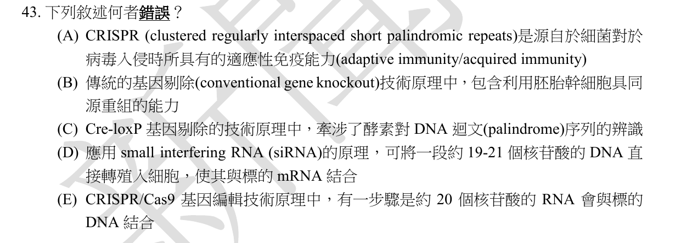
原卷PDF8 · 官方原答案PDF10 · 已核對生物釋疑PDF4–7
官方採計：D 原答案：D
未列於已取得106生物釋疑PDF4–7；依同年度原答案PDF10採計
主分類：Ch20 DNA Tools and Biotechnology
20.2 / Determining Gene Function
目錄行1254；條目起始印刷頁426；實際目錄 PDF40
次分類：Ch18 Regulation of Gene Expression
18.3 / Effects on mRNAs by MicroRNAs and Small Interfering RNAs
目錄行1136；條目起始印刷頁379；實際目錄 PDF39
次分類：Ch17 Gene Expression: From Gene to Protein
17.5 / Using CRISPR to Edit Genes and Correct Disease-Causing Mutations
目錄行1091；條目起始印刷頁360；實際目錄 PDF39
主分類理由：20.2 / Determining Gene Function：比較剔除、RNA干擾及基因編輯等功能研究工具，屬基因功能判定。
次分類理由：18.3 / Effects on mRNAs by MicroRNAs and Small Interfering RNAs：siRNA是RNA介導mRNA抑制，直接排除DNA描述；17.5 / Using CRISPR to Edit Genes and Correct Disease-Causing Mutations：CRISPR的guide RNA辨識DNA與細菌來源另作次目。
科學說明：官方D。直接配對標的mRNA的siRNA是RNA，不是把19–21nt DNA直接當siRNA；DNA載體可表達干擾RNA但屬於另一個步驟。Cre辨識loxP的13bp反向重複，中央8bp不對稱，整個34bp不可說成完整回文；保留C的簡寫限制。Cas9需guide RNA與相容PAM。
來源涵蓋範圍：本地Campbell支援所列分類框架；具名外部事件／機制／科學界線由列示來源補充，實讀範圍見來源紀錄。
教材正文：印刷360／PDF409、印刷361／PDF410、印刷379／PDF428、印刷380／PDF429、印刷426／PDF475、印刷427／PDF476
補充來源：S18
另行比較：分辨核酸化學種類、DNA表達載體及loxP局部對稱。
Campbell提供技術框架，原始lox研究圖說確認13／8／13結構；D不因載體可能為DNA而變正確。
結論：證據確認，分類疑義已解決。完整覆核紀錄
Q44 · 12.2 / Cytokinesis: A Closer Look 正式分類
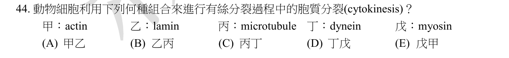
原卷PDF8 · 官方原答案PDF10 · 已核對生物釋疑PDF4–7
官方採計：E 原答案：E
未列於已取得106生物釋疑PDF4–7；依同年度原答案PDF10採計
主分類：Ch12 The Cell Cycle
12.2 / Cytokinesis: A Closer Look
目錄行776；條目起始印刷頁241；實際目錄 PDF38
次分類：Ch06 A Tour of the Cell
6.6 / Components of the Cytoskeleton
目錄行381；條目起始印刷頁113；實際目錄 PDF36
主分類理由：12.2 / Cytokinesis: A Closer Look：動物胞質分裂由分裂溝收縮環執行。
次分類理由：6.6 / Components of the Cytoskeleton：微絲actin與運動蛋白myosin的相互作用提供收縮力。
科學說明：官方E（戊甲）。actin–myosin收縮環使細胞膜內陷；microtubule–dynein涉及其他運動，不能代替分裂溝收縮機制，lamin為核纖層構件。
來源涵蓋範圍：本地Campbell正文支援所列分類原理；原題及同年度釋疑的假設與措辭限制另見科學說明。
教材正文：印刷116／PDF165、印刷117／PDF166、印刷241／PDF290、印刷242／PDF291
補充來源：本題未另列課本外來源
另行比較：比較有絲分裂紡錘體和胞質分裂兩個步驟。
12.2最低條目明列Cytokinesis，6.6保存細胞骨架次目，避免因題含mitosis而選染色體移動。
結論：證據確認，分類疑義已解決。完整覆核紀錄
Q45 · 44.4 / From Blood Filtrate to Urine: A Closer Look 正式分類
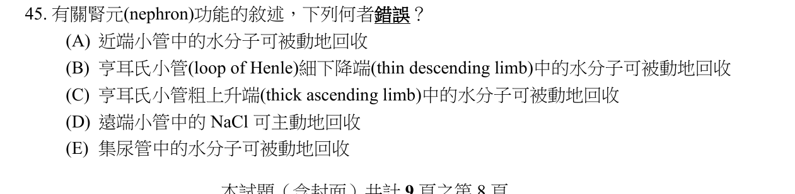
原卷PDF8 · 官方原答案PDF10 · 已核對生物釋疑PDF4–7
官方採計：C 原答案：C
未列於已取得106生物釋疑PDF4–7；依同年度原答案PDF10採計
主分類：Ch44 Osmoregulation and Excretion
44.4 / From Blood Filtrate to Urine: A Closer Look
目錄行2974；條目起始印刷頁987；實際目錄 PDF47
次分類：Ch44 Osmoregulation and Excretion
44.4 / Solute Gradients and Water Conservation
目錄行2977；條目起始印刷頁989；實際目錄 PDF47
主分類理由：44.4 / From Blood Filtrate to Urine: A Closer Look：亨耳氏環各段水與鹽通透性，直接判斷粗上升支不透水。
次分類理由：44.4 / Solute Gradients and Water Conservation：逆流與髓質溶質梯度說明為何上升支鹽運輸與水回收分離。
科學說明：官方C。粗上升支可主動回收NaCl但不透水；下降支可透水。集尿管的水通透性受ADH調控，存在水通道時沿滲透梯度被動回收，E不等於永遠固定回收率。
來源涵蓋範圍：本地Campbell正文支援所列分類原理；原題及同年度釋疑的假設與措辭限制另見科學說明。
教材正文：印刷987／PDF1036、印刷988／PDF1037、印刷989／PDF1038、印刷990／PDF1039
補充來源：本題未另列課本外來源
另行比較：比較水的被動滲透與鹽的主動／被動運輸。
44.4逐段濾液路徑為主、同Concept溶質梯度為次；不把整個Henle環當相同通透性。
結論：證據確認，分類疑義已解決。完整覆核紀錄
Q46 · 18.5 / Types of Genes Associated with Cancer 正式分類
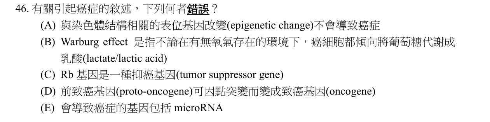
原卷PDF9 · 官方原答案PDF10 · 已核對生物釋疑PDF4–7
官方採計：A 原答案：A
未列於已取得106生物釋疑PDF4–7；依同年度原答案PDF10採計
主分類：Ch18 Regulation of Gene Expression
18.5 / Types of Genes Associated with Cancer
目錄行1163；條目起始印刷頁388；實際目錄 PDF40
次分類：Ch18 Regulation of Gene Expression
18.2 / Regulation of Chromatin Structure
目錄行1123；條目起始印刷頁371；實際目錄 PDF39
次分類：Ch18 Regulation of Gene Expression
18.3 / Effects on mRNAs by MicroRNAs and Small Interfering RNAs
目錄行1136；條目起始印刷頁379；實際目錄 PDF39
次分類：Ch09 Cellular Respiration and Fermentation
9.5 / Comparing Fermentation with Anaerobic and Aerobic Respiration
目錄行598；條目起始印刷頁181；實際目錄 PDF37
主分類理由：18.5 / Types of Genes Associated with Cancer：抑癌／前致癌基因及其調控失常決定癌症風險。
次分類理由：18.2 / Regulation of Chromatin Structure：染色質修飾及表觀遺傳可影響抑癌基因表達；18.3 / Effects on mRNAs by MicroRNAs and Small Interfering RNAs：microRNA可調控致癌相關mRNA；9.5 / Comparing Fermentation with Anaerobic and Aerobic Respiration：Warburg現象需區別發酵與有氧呼吸。
科學說明：官方A。DNA甲基化、組蛋白等表觀遺傳異常可促成癌症，不能說不會；Rb為抑癌基因，點突變可活化前致癌基因，miRNA亦可參與。Warburg指有氧時仍偏好高糖解／乳酸生成，並非所有癌細胞完全停止粒線體呼吸；原題「表位基因」字樣保留。
來源涵蓋範圍：本地Campbell支援所列分類框架；具名外部事件／機制／科學界線由列示來源補充，實讀範圍見來源紀錄。
教材正文：印刷181／PDF230、印刷371／PDF420、印刷372／PDF421、印刷379／PDF428、印刷380／PDF429、印刷388／PDF437、印刷389／PDF438、印刷390／PDF439、印刷391／PDF440
補充來源：S20
另行比較：比較DNA序列突變與不改序列的表達調控，並界定Warburg。
18.5為主，18.2／18.3同章次目與9.5代謝次目各自保存；官方A可由表觀遺傳機制查證，Warburg的粒線體界線由原始研究補充。
結論：證據確認，分類疑義已解決。完整覆核紀錄
Q47 · 41.3 / Processing in the Large Intestine 正式分類
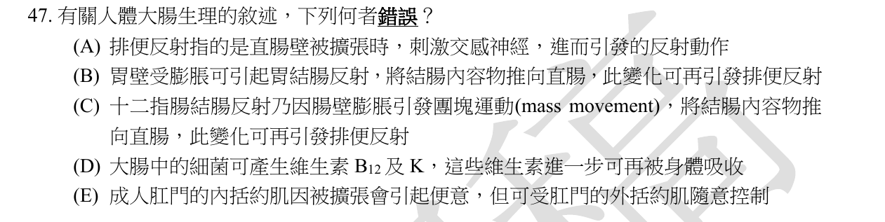
原卷PDF9 · 官方原答案PDF10 · 已核對生物釋疑PDF4–7
官方採計：A 原答案：A
未列於已取得106生物釋疑PDF4–7；依同年度原答案PDF10採計
主分類：Ch41 Animal Nutrition
41.3 / Processing in the Large Intestine
目錄行2720；條目起始印刷頁910；實際目錄 PDF46
次分類：Ch49 Nervous Systems
49.1 / The Peripheral Nervous System
目錄行3245；條目起始印刷頁1088；實際目錄 PDF48
主分類理由：41.3 / Processing in the Large Intestine：排便、胃結腸反射及大腸細菌屬大腸內容物處理。
次分類理由：49.1 / The Peripheral Nervous System：副交感／腸神經網路促進消化排便，排除A的交感敘述。
科學說明：官方A。直腸牽張啟動腸神經與副交感排便反射，外肛門括約肌有隨意控制。E將感覺起點寫成內括約肌擴張較不精確，主要為直腸牽張。D雖提細菌合成B12/K，B12常規吸收在較上游的遠端迴腸，不能當作結腸產B12能充分供人體吸收的可靠結論。原D保留，未取得本題更正，不自行增採D。
來源涵蓋範圍：本地Campbell支援所列分類框架；具名外部事件／機制／科學界線由列示來源補充，實讀範圍見來源紀錄。
教材正文：印刷910／PDF959、印刷911／PDF960、印刷1088／PDF1137、印刷1089／PDF1138、印刷1090／PDF1139
補充來源：S19
另行比較：核對直腸／括約肌及交感／副交感，再查大腸B12吸收界線。
Campbell911寫菌群可提供K、生物素與葉酸，未把B12同列；NIH記B12–內因子在遠端迴腸吸收。科學措辭差異保存，分類已確認。
結論：證據確認，分類疑義已解決。完整覆核紀錄
Q48 · 44.5 / Homeostatic Regulation of the Kidney 正式分類
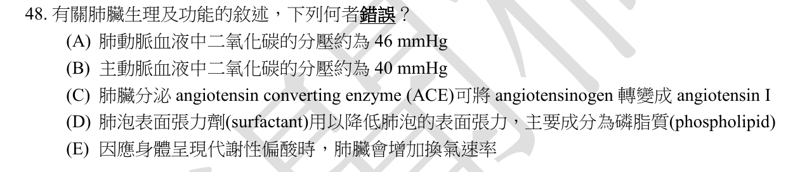
原卷PDF9 · 官方原答案PDF10 · 已核對生物釋疑PDF4–7
官方採計：C 原答案：C
未列於已取得106生物釋疑PDF4–7；依同年度原答案PDF10採計
主分類：Ch44 Osmoregulation and Excretion
44.5 / Homeostatic Regulation of the Kidney
目錄行2987；條目起始印刷頁994；實際目錄 PDF47
次分類：Ch42 Circulation and Gas Exchange
42.6 / Control of Breathing in Humans
目錄行2843；條目起始印刷頁946；實際目錄 PDF46
主分類理由：44.5 / Homeostatic Regulation of the Kidney：C混淆RAAS兩步反應，主目為腎臟的激素恆定調節。
次分類理由：42.6 / Control of Breathing in Humans：代謝性酸化透過增加換氣降低CO2，是E的呼吸調控。
科學說明：官方C。renin把angiotensinogen變I，ACE主要把I變II；肺血管內皮具ACE，不能把renin步驟移給ACE。肺動脈／主動脈CO2約46／40mmHg是安靜典型值；肺泡表面張力劑以磷脂降低表面張力。
來源涵蓋範圍：本地Campbell正文支援所列分類原理；原題及同年度釋疑的假設與措辭限制另見科學說明。
教材正文：印刷946／PDF995、印刷947／PDF996、印刷994／PDF1043、印刷995／PDF1044
補充來源：本題未另列課本外來源
另行比較：比較題名肺臟與實際錯誤的RAAS酶步驟。
依錯誤所在選44.5，而42.6留作次目；兩個酶底物與產物逐步核對，未因題名一律歸肺章。
結論：證據確認，分類疑義已解決。完整覆核紀錄
Q49 · 27.6 / Pathogenic Bacteria 正式分類
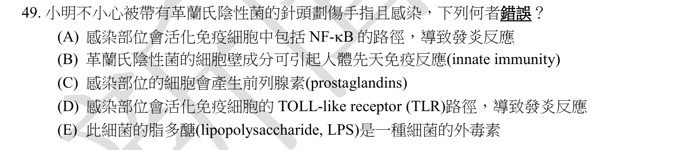
原卷PDF9 · 官方原答案PDF10 · 已核對生物釋疑PDF4–7
官方採計：E 原答案：E
未列於已取得106生物釋疑PDF4–7；依同年度原答案PDF10採計
主分類：Ch27 Bacteria and Archaea
27.6 / Pathogenic Bacteria
目錄行1774；條目起始印刷頁588；實際目錄 PDF42
次分類：Ch43 The Immune System
43.1 / Innate Immunity of Vertebrates
目錄行2870；條目起始印刷頁954；實際目錄 PDF47
主分類理由：27.6 / Pathogenic Bacteria：LPS是革蘭陰性細菌內毒素，與外毒素區別為核心。
次分類理由：43.1 / Innate Immunity of Vertebrates：TLR辨識微生物成分並引起先天發炎反應。
科學說明：官方E。LPS屬外膜內毒素，不是外毒素；可經TLR4等訊號活化NF-κB，感染也可引起前列腺素等介質。內毒素的「內」是毒素類型，並不表示只能細菌死亡後才可能釋出；此處不擴增釋放時機的絕對敘述。
來源涵蓋範圍：本地Campbell正文支援所列分類原理；原題及同年度釋疑的假設與措辭限制另見科學說明。
教材正文：印刷588／PDF637、印刷589／PDF638、印刷954／PDF1003、印刷955／PDF1004、印刷956／PDF1005、印刷957／PDF1006
補充來源：本題未另列課本外來源
另行比較：比較細胞壁成分與分泌蛋白毒素及免疫後果。
27.6病原菌主目配43.1先天免疫次目，A–D描述反應可與E的毒素類型錯誤區分。
結論：證據確認，分類疑義已解決。完整覆核紀錄
Q50 · 46.5 / Conception, Embryonic Development, and Birth 正式分類
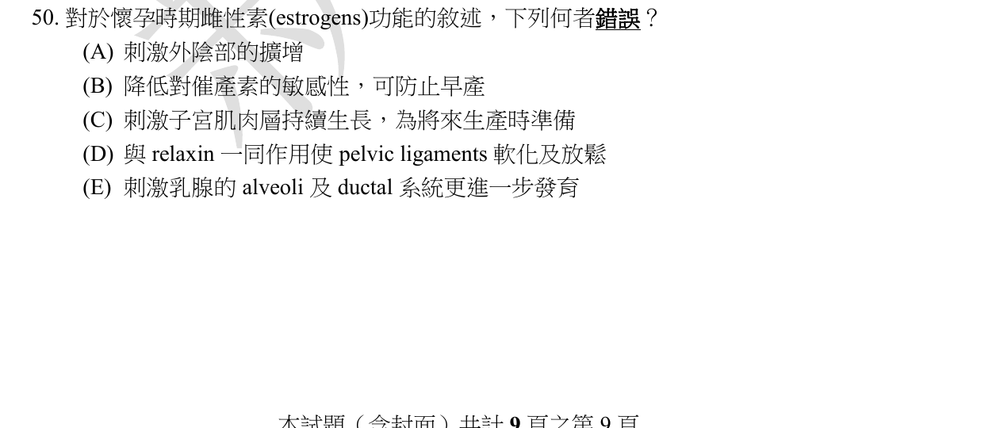
原卷PDF9 · 官方原答案PDF10 · 釋疑PDF7
官方採計：B 原答案：B
維持原答案B
主分類：Ch46 Animal Reproduction
46.5 / Conception, Embryonic Development, and Birth
目錄行3114；條目起始印刷頁1034；實際目錄 PDF48
主分類理由：46.5 / Conception, Embryonic Development, and Birth：懷孕末期及生產的雌激素／催產素正回饋直接判別B。
次分類理由：無另列最小次條目；46.5受孕至生產條目有雌激素／催產素關係；維持官方B，沒有混用其他年度妊娠釋疑。
科學說明：官方B，釋疑維持。接近分娩時雌激素增加子宮對催產素的反應，而非降低敏感性防早產；孕酮常支持妊娠中的子宮安定。子宮、外生殖器、乳房與骨盆變化涉及多激素協同，不能將其他選項讀成雌激素單獨充分完成全部作用。
來源涵蓋範圍：本地Campbell正文支援所列分類原理；原題及同年度釋疑的假設與措辭限制另見科學說明。
教材正文：印刷1034／PDF1083、印刷1035／PDF1084、印刷1036／PDF1085、印刷1037／PDF1086
補充來源：本題未另列課本外來源
另行比較：確認公告對外生殖器與B敏感性方向的說明。
46.5受孕至生產條目有雌激素／催產素關係；維持官方B，沒有混用其他年度妊娠釋疑。
結論：證據確認，分類疑義已解決。完整覆核紀錄
目前篩選沒有符合的題目；本年度總數仍為50題。
補充來源
查證日期：2026-09-09。使用原始研究摘要、官方資料與作者教材，不宣稱所有出版商全文已取得。詳細界線見來源紀錄。
- S01 NOAA：氣候變遷與珊瑚礁
熱壓力可導致白化；海洋酸化妨礙珊瑚生長及結構維持。兩種壓力不能當成同一生理機制。
實讀範圍：官方頁面的暖化及酸化段落文字；未觀看影音。
原始來源1 · 原始來源2 - S02 Cooper：DNA Repair；NLM MeSH：DNA Damage Tolerance
複製後修復可填補損傷對側的新股缺口，原損傷可留待其他機制處理；DNA耐受與去除損傷並非同義。
實讀範圍：作者教材Postreplication Repair小節與NLM定義文字；未將其稱為本地Campbell內容。
原始來源1 · 原始來源2 - S03 Burke等（1972）：Protein and Ribonucleic Acid Synthesis During the Diploid Life Cycle of Allomyces arbuscula
研究明列二倍體生活史中的孢子誘導、萌發、營養生長和mitosporangium形成，可反證所有真菌無性孢子必單倍體的概括。
實讀範圍：本輪搜尋回傳原研究摘要；PMC頁面另遇驗證頁，未宣稱取得或逐頁讀完全文。原研究書目另由ASM卷110期3目錄確認。
原始來源1 · 原始來源2 - S04 USGS：Potassium Isotopes／Radiometric Time Scale
40K有通向40Ar與40Ca的衰變分支；真實定年需處理分支與系統假設，不能直接把題目提供氬的全部質量當唯一衰變產物。
實讀範圍：USGS同位素頁搜尋回傳相關段落及定年說明；僅為模型界線，題設13億年半衰期仍原樣採用。
原始來源1 · 原始來源2 - S05 Dedysh等（2005）：Methylocella species are facultatively methanotrophic
研究以培養、PCR等檢查確認Methylocella可用乙酸等多碳來源生長，不是所有甲烷氧化菌均只能用甲烷。
實讀範圍：PubMed原研究完整摘要；不宣稱全文已閱。
原始來源1 - S06 Endotext：Adrenal Insufficiency
原發性腎上腺不足的表格列低鈉、高鉀、代謝性酸中毒及氮血症，色素沉著與ACTH相關。
實讀範圍：作者章節Clinical Recognition及Table 1相關文字；用於考題病理推理，非個人醫療建議。
原始來源1 - S07 Piercey-Normore與DePriest（2001）：Algal switching among lichen symbioses
33個地衣共生體的基因序列比較顯示藻與真菌系統樹不一致及伙伴切換，不能直接等同高度平行共同分化。
實讀範圍：PubMed完整研究摘要；同年度釋疑PDF6另實看其引用系統樹，未宣稱研究全文已讀。
原始來源1 - S08 Biochemistry, Gluconeogenesis
甘油與生糖胺基酸可供糖新生；偶數鏈脂肪酸和leucine/lysine為生酮範圍，奇數鏈脂肪酸末端可經propionyl-CoA／succinyl-CoA生糖。
實讀範圍：作者章節的底物與奇數鏈脂肪酸段落文字；植物glyoxysome範圍另以本地Campbell112支持。
原始來源1 - S09 Cooper：RNA Processing and Turnover
加帽為5′端修飾；Group I外源G、Group II內部A起始，剪接套索為2′–5′鍵；常見內含子3′端AG。
實讀範圍：作者教材相關RNA剪接與末端加工段落文字；不宣稱此為Campbell的逐字內容。
原始來源1 - S10 （2023）Mechanism of rotenone binding to respiratory complex I depends on ligand flexibility
原始研究直接研究魚藤酮在Complex I的結合與抑制，支持區分電子傳遞鏈標的與ATP合成酶。
實讀範圍：PubMed原研究完整摘要與圖1文字；屬後續機制佐證，不是106年度官方答案來源。
原始來源1 - S11 Physiology, Respiratory Quotient
只採RQ=VCO2/VO2及醣1、脂肪約0.7的定義；混合時的耗氧權重與攝入質量或熱量比例須另換算。
實讀範圍：作者條目Introduction及基本底物計量段落；未採該頁其他反應式或臨床敘述。權重結論另以本地代數推導驗證。
原始來源1 - S12 McGarry等（1977）：A possible role for malonyl-CoA in the regulation of hepatic fatty acid oxidation and ketogenesis
大鼠肝研究顯示malonyl-CoA抑制長鏈脂肪酸生酮，抑制點在carnitine acyltransferase I；支持合成與氧化反向調節。
實讀範圍：原始研究摘要與PDF首段文字；未宣稱逐頁全文覆核。
原始來源1 · 原始來源2 - S13 Hastings與Krainer（2001）：Functions of SR proteins in the U12-dependent AT-AC pre-mRNA splicing pathway
生化實驗研究U12依賴的AT–AC內含子，證明常見GU–AG並非所有內含子的固定兩端。DNA寫AT–AC，RNA對應AU–AC。
實讀範圍：PubMed原始研究完整摘要。
原始來源1 - S14 Cooper：Protein Folding and Processing
myristoylation附於N端附近的glycine，常在轉譯中完成；prenylation可讓蛋白朝膜細胞質面定位，通常仍有其他訊號。
實讀範圍：作者教材脂質修飾相關段落文字；未將共轉譯一律稱為轉譯後。
原始來源1 - S15 Endotext：Introduction to Lipids and Lipoproteins
區分LDL與HDL的膽固醇運輸、LCAT酯化、CETP交換及HDL膽固醇回肝；整顆粒成分比例與膽固醇酯化比例不是同一分母。
實讀範圍：作者章節脂蛋白與HDL metabolism相關段落；Q37比例方向採同年度釋疑及標準整粒組成含義，不宣稱此段提供固定百分比。
原始來源1 - S16 Yatani等（1987）心房K通道；Solaro（2011）Regulation of Cardiac Contractility
迷走／muscarinic ACh受體經G蛋白打開心房K通道；膜Ca流入誘發SR釋Ca，後者是心肌收縮的重要鈣來源，支持Q39 C措辭歧義。
實讀範圍：PubMed原研究摘要；Solaro作者章節Control of Contractility第40–42行Ca誘發Ca釋放內容。未採該頁把電耦合接點寫成tight junction的錯稱，正確為gap junction。
原始來源1 · 原始來源2 - S17 Moynahan等（1999）：Brca1 controls homology-directed DNA repair
BRCA1缺陷的胚胎幹細胞同源導向雙股斷裂修復受損，支援BRCA1與DSB/HR的連結。
實讀範圍：PubMed完整原始研究摘要，不宣稱全文閱畢。
原始來源1 - S18 （2010）Comparative analysis of right element mutant lox sites on recombination efficiency in embryonic stem cells
原研究圖1說明loxP的13bp反向重複夾8bp不對稱核心，故辨識回文元件不等於整個34bp完全回文。
實讀範圍：PubMed原研究圖1說明與摘要；未完整檢讀所有圖或全文。
原始來源1 - S19 NIH ODS：Vitamin B12 Fact Sheet for Health Professionals
B12與內因子結合後在遠端迴腸經受體吸收；不能不加限制把較下游大腸菌合成B12視為充分供人體吸收。
實讀範圍：官方事實表介紹段落關於B12釋出、內因子及遠端迴腸吸收的文字。
原始來源1 - S20 Suhane與Ramanujan（2011）：Thyroid hormone differentially modulates Warburg phenotype in breast cancer cells
兩種乳癌細胞的實驗顯示Warburg型態與粒線體代謝可以並存，粒線體失能不是高Warburg表型的必要條件。
實讀範圍：原始研究摘要及Introduction相關文字；直接PubMed開頁曾429，搜尋回傳PubMed與PMC原文成功。未閱讀全部實驗圖或提出治療建議。
原始來源1 · 原始來源2